| Searless Valley Sequence Finite Fault | |
|---|---|
| Num Simulations | 100000 |
| Start Time | 2019/07/06 03:19:53 UTC |
| Start Time Epoch Milliseconds | 1562383193000 |
| Duration | 10 Years |
| Includes Spontaneous? | false |
| Trigger Ruptures | 217 Trigger Ruptures |
| First: M3.98 at 2019/07/04 17:02:55 UTC | |
| Last: M7.1 at 2019/07/06 03:19:52 UTC | |
| Largest: M7.1 at 2019/07/06 03:19:52 UTC | |
| Trigger Ruptures | (none) |
| Magnitude | 1 Hour Prob | 1 Day Prob | 1 Week Prob | 1 Month Prob | 1 Year Prob | 10 Year Prob |
|---|---|---|---|---|---|---|
| M≥4 | 1.000 (100.00%) | 1.000 (100.00%) | 1.000 (100.00%) | 1.000 (100.00%) | 1.000 (100.00%) | 1.000 (100.00%) |
| M≥4.5 | 0.991 (99.10%) | 1.000 (100.00%) | 1.000 (100.00%) | 1.000 (100.00%) | 1.000 (100.00%) | 1.000 (100.00%) |
| M≥5 | 0.773 (77.34%) | 0.978 (97.79%) | 0.996 (99.58%) | 0.999 (99.87%) | 1.000 (99.98%) | 1.000 (100.00%) |
| M≥5.5 | 0.357 (35.68%) | 0.689 (68.89%) | 0.814 (81.37%) | 0.875 (87.53%) | 0.939 (93.86%) | 0.968 (96.77%) |
| M≥6 | 0.108 (10.75%) | 0.266 (26.62%) | 0.366 (36.57%) | 0.437 (43.70%) | 0.545 (54.51%) | 0.627 (62.74%) |
| M≥6.5 | 0.023 (2.29%) | 0.062 (6.16%) | 0.091 (9.08%) | 0.114 (11.38%) | 0.156 (15.65%) | 0.195 (19.52%) |
| M≥7 | 5.86E-3 (0.59%) | 0.016 (1.62%) | 0.024 (2.42%) | 0.031 (3.06%) | 0.043 (4.32%) | 0.055 (5.51%) |
| M≥7.1 | 4.67E-3 (0.47%) | 0.013 (1.27%) | 0.019 (1.92%) | 0.024 (2.42%) | 0.034 (3.41%) | 0.043 (4.35%) |
| M≥7.5 | 1.53E-3 (0.15%) | 4.01E-3 (0.40%) | 6.33E-3 (0.63%) | 8.05E-3 (0.80%) | 0.011 (1.14%) | 0.015 (1.46%) |
| M≥8 | 1.00E-5 (0.00%) | 4.00E-5 (0.00%) | 9.00E-5 (0.01%) | 1.10E-4 (0.01%) | 1.60E-4 (0.02%) | 2.30E-4 (0.02%) |
Legend
| Mag | Mean | 2.5 %ile | 97.5 %ile | Median | Mode | 10 yr Probability | 10 yr Supra-Seis Prob | Primary Aftershocks Mean |
|---|---|---|---|---|---|---|---|---|
| M≥2.5 | 5248.048 | 3641.000 | 11960.000 | 4564.000 | 4154.000 | 1.000 (100.00%) | 0.273 (27.26%) | 2381.891 |
| M≥2.6 | 4168.501 | 2886.000 | 9504.000 | 3626.000 | 3244.000 | 1.000 (100.00%) | 0.273 (27.26%) | 1891.879 |
| M≥2.7 | 3311.067 | 2288.000 | 7564.000 | 2881.000 | 2642.000 | 1.000 (100.00%) | 0.273 (27.26%) | 1502.766 |
| M≥2.8 | 2629.994 | 1812.000 | 6005.000 | 2288.000 | 2183.000 | 1.000 (100.00%) | 0.273 (27.26%) | 1193.638 |
| M≥2.9 | 2089.018 | 1436.000 | 4772.000 | 1819.000 | 1653.000 | 1.000 (100.00%) | 0.273 (27.26%) | 948.108 |
| M≥3 | 1659.284 | 1136.000 | 3785.000 | 1446.000 | 1354.000 | 1.000 (100.00%) | 0.273 (27.26%) | 752.967 |
| M≥3.1 | 1317.865 | 898.000 | 3015.000 | 1148.000 | 1092.000 | 1.000 (100.00%) | 0.273 (27.26%) | 598.022 |
| M≥3.2 | 1046.777 | 709.000 | 2393.000 | 913.000 | 827.000 | 1.000 (100.00%) | 0.273 (27.26%) | 474.973 |
| M≥3.3 | 831.351 | 560.000 | 1899.000 | 725.000 | 688.000 | 1.000 (100.00%) | 0.273 (27.26%) | 377.209 |
| M≥3.4 | 660.181 | 441.000 | 1511.000 | 577.000 | 545.000 | 1.000 (100.00%) | 0.273 (27.26%) | 299.560 |
| M≥3.5 | 524.321 | 347.000 | 1202.000 | 458.000 | 441.000 | 1.000 (100.00%) | 0.273 (27.26%) | 237.919 |
| M≥3.6 | 416.399 | 272.000 | 957.000 | 365.000 | 347.000 | 1.000 (100.00%) | 0.273 (27.26%) | 188.935 |
| M≥3.7 | 330.653 | 213.000 | 761.000 | 290.000 | 267.000 | 1.000 (100.00%) | 0.273 (27.26%) | 150.018 |
| M≥3.8 | 262.584 | 167.000 | 605.000 | 230.000 | 214.000 | 1.000 (100.00%) | 0.273 (27.26%) | 119.119 |
| M≥3.9 | 208.501 | 130.000 | 481.000 | 183.000 | 167.000 | 1.000 (100.00%) | 0.273 (27.26%) | 94.576 |
| M≥4 | 165.526 | 101.000 | 384.000 | 146.000 | 132.000 | 1.000 (100.00%) | 0.273 (27.26%) | 75.082 |
| M≥4.1 | 131.424 | 78.000 | 306.000 | 116.000 | 107.000 | 1.000 (100.00%) | 0.273 (27.26%) | 59.610 |
| M≥4.2 | 104.325 | 60.000 | 244.000 | 92.000 | 83.000 | 1.000 (100.00%) | 0.273 (27.26%) | 47.310 |
| M≥4.3 | 82.780 | 46.000 | 195.000 | 73.000 | 67.000 | 1.000 (100.00%) | 0.273 (27.26%) | 37.541 |
| M≥4.4 | 65.650 | 35.000 | 154.000 | 58.000 | 51.000 | 1.000 (100.00%) | 0.273 (27.26%) | 29.781 |
| M≥4.5 | 52.068 | 27.000 | 123.000 | 46.000 | 41.000 | 1.000 (100.00%) | 0.273 (27.26%) | 23.626 |
| M≥4.6 | 41.266 | 20.000 | 98.000 | 37.000 | 33.000 | 1.000 (100.00%) | 0.273 (27.26%) | 18.732 |
| M≥4.7 | 32.672 | 15.000 | 79.000 | 29.000 | 25.000 | 1.000 (100.00%) | 0.273 (27.26%) | 14.822 |
| M≥4.8 | 25.865 | 11.000 | 63.000 | 23.000 | 21.000 | 1.000 (100.00%) | 0.273 (27.26%) | 11.733 |
| M≥4.9 | 20.446 | 8.000 | 50.000 | 18.000 | 16.000 | 1.000 (100.00%) | 0.273 (27.26%) | 9.274 |
| M≥5 | 16.143 | 5.000 | 40.000 | 14.000 | 12.000 | 1.000 (100.00%) | 0.273 (27.26%) | 7.322 |
| M≥5.1 | 12.726 | 4.000 | 32.000 | 11.000 | 10.000 | 1.000 (99.98%) | 0.273 (27.26%) | 5.770 |
| M≥5.2 | 10.013 | 2.000 | 26.000 | 9.000 | 8.000 | 0.999 (99.88%) | 0.273 (27.26%) | 4.536 |
| M≥5.3 | 7.855 | 2.000 | 21.000 | 7.000 | 5.000 | 0.995 (99.51%) | 0.273 (27.26%) | 3.557 |
| M≥5.4 | 6.151 | 1.000 | 17.000 | 5.000 | 4.000 | 0.986 (98.64%) | 0.273 (27.26%) | 2.785 |
| M≥5.5 | 4.790 | 0.000 | 14.000 | 4.000 | 3.000 | 0.968 (96.77%) | 0.273 (27.26%) | 2.165 |
| M≥5.6 | 3.712 | 0.000 | 11.000 | 3.000 | 2.000 | 0.933 (93.26%) | 0.273 (27.26%) | 1.674 |
| M≥5.7 | 2.855 | 0.000 | 9.000 | 2.000 | 2.000 | 0.880 (88.00%) | 0.273 (27.26%) | 1.284 |
| M≥5.8 | 2.175 | 0.000 | 7.000 | 2.000 | 1.000 | 0.808 (80.79%) | 0.273 (27.26%) | 0.976 |
| M≥5.9 | 1.640 | 0.000 | 6.000 | 1.000 | 1.000 | 0.720 (72.00%) | 0.273 (27.25%) | 0.732 |
| M≥6 | 1.252 | 0.000 | 5.000 | 1.000 | 0.000 | 0.627 (62.74%) | 0.272 (27.23%) | 0.551 |
| M≥6.1 | 0.891 | 0.000 | 4.000 | 1.000 | 0.000 | 0.514 (51.39%) | 0.220 (21.99%) | 0.398 |
| M≥6.2 | 0.608 | 0.000 | 3.000 | 0.000 | 0.000 | 0.399 (39.87%) | 0.186 (18.63%) | 0.272 |
| M≥6.3 | 0.446 | 0.000 | 3.000 | 0.000 | 0.000 | 0.316 (31.61%) | 0.153 (15.32%) | 0.201 |
| M≥6.4 | 0.335 | 0.000 | 2.000 | 0.000 | 0.000 | 0.250 (24.97%) | 0.135 (13.51%) | 0.149 |
| M≥6.5 | 0.251 | 0.000 | 2.000 | 0.000 | 0.000 | 0.195 (19.52%) | 0.115 (11.47%) | 0.112 |
| M≥6.6 | 0.195 | 0.000 | 2.000 | 0.000 | 0.000 | 0.160 (15.99%) | 0.102 (10.17%) | 0.089 |
| M≥6.7 | 0.151 | 0.000 | 1.000 | 0.000 | 0.000 | 0.128 (12.76%) | 0.086 (8.59%) | 0.070 |
| M≥6.8 | 0.114 | 0.000 | 1.000 | 0.000 | 0.000 | 0.101 (10.05%) | 0.072 (7.20%) | 0.054 |
| M≥6.9 | 0.082 | 0.000 | 1.000 | 0.000 | 0.000 | 0.075 (7.46%) | 0.056 (5.59%) | 0.039 |
| M≥7 | 0.059 | 0.000 | 1.000 | 0.000 | 0.000 | 0.055 (5.51%) | 0.043 (4.33%) | 0.028 |
| M≥7.1 | 0.046 | 0.000 | 1.000 | 0.000 | 0.000 | 0.043 (4.35%) | 0.037 (3.66%) | 0.021 |
| M≥7.2 | 0.033 | 0.000 | 1.000 | 0.000 | 0.000 | 0.032 (3.23%) | 0.028 (2.82%) | 0.015 |
| M≥7.3 | 0.023 | 0.000 | 0.000 | 0.000 | 0.000 | 0.023 (2.26%) | 0.021 (2.06%) | 9.96E-3 |
| M≥7.4 | 0.020 | 0.000 | 0.000 | 0.000 | 0.000 | 0.019 (1.93%) | 0.019 (1.85%) | 8.51E-3 |
| M≥7.5 | 0.015 | 0.000 | 0.000 | 0.000 | 0.000 | 0.015 (1.46%) | 0.014 (1.44%) | 6.25E-3 |
| M≥7.6 | 7.68E-3 | 0.000 | 0.000 | 0.000 | 0.000 | 7.55E-3 (0.76%) | 7.46E-3 (0.75%) | 3.21E-3 |
| M≥7.7 | 2.54E-3 | 0.000 | 0.000 | 0.000 | 0.000 | 2.52E-3 (0.25%) | 2.48E-3 (0.25%) | 9.30E-4 |
| M≥7.8 | 1.55E-3 | 0.000 | 0.000 | 0.000 | 0.000 | 1.54E-3 (0.15%) | 1.52E-3 (0.15%) | 6.20E-4 |
| M≥7.9 | 7.80E-4 | 0.000 | 0.000 | 0.000 | 0.000 | 7.80E-4 (0.08%) | 7.80E-4 (0.08%) | 3.50E-4 |
| M≥8 | 2.30E-4 | 0.000 | 0.000 | 0.000 | 0.000 | 2.30E-4 (0.02%) | 2.30E-4 (0.02%) | 9.00E-5 |
| M≥8.1 | 3.00E-5 | 0.000 | 0.000 | 0.000 | 0.000 | 3.00E-5 (0.00%) | 3.00E-5 (0.00%) | 2.00E-5 |
| M≥8.2 | 0.000 | 0.000 | 0.000 | 0.000 | 0.000 | 0.000 (0.00%) | 0.000 (0.00%) | 0.000 |
| M≥8.3 | 0.000 | 0.000 | 0.000 | 0.000 | 0.000 | 0.000 (0.00%) | 0.000 (0.00%) | 0.000 |
| M≥8.4 | 0.000 | 0.000 | 0.000 | 0.000 | 0.000 | 0.000 (0.00%) | 0.000 (0.00%) | 0.000 |
| M≥8.5 | 0.000 | 0.000 | 0.000 | 0.000 | 0.000 | 0.000 (0.00%) | 0.000 (0.00%) | 0.000 |
| M≥8.6 | 0.000 | 0.000 | 0.000 | 0.000 | 0.000 | 0.000 (0.00%) | 0.000 (0.00%) | 0.000 |
| M≥8.7 | 0.000 | 0.000 | 0.000 | 0.000 | 0.000 | 0.000 (0.00%) | 0.000 (0.00%) | 0.000 |
| M≥8.8 | 0.000 | 0.000 | 0.000 | 0.000 | 0.000 | 0.000 (0.00%) | 0.000 (0.00%) | 0.000 |
| M≥8.9 | 0.000 | 0.000 | 0.000 | 0.000 | 0.000 | 0.000 (0.00%) | 0.000 (0.00%) | 0.000 |
| M≥9 | 0.000 | 0.000 | 0.000 | 0.000 | 0.000 | 0.000 (0.00%) | 0.000 (0.00%) | 0.000 |
Legend

| Mag | Mean | 2.5 %ile | 97.5 %ile | Median | Mode | 1 yr Probability | 1 yr Supra-Seis Prob | Primary Aftershocks Mean |
|---|---|---|---|---|---|---|---|---|
| M≥2.5 | 4004.922 | 2939.000 | 8111.000 | 3561.000 | 3233.000 | 1.000 (100.00%) | 0.216 (21.62%) | 2076.278 |
| M≥2.6 | 3181.111 | 2329.000 | 6434.000 | 2829.000 | 2575.000 | 1.000 (100.00%) | 0.216 (21.62%) | 1649.143 |
| M≥2.7 | 2526.736 | 1845.000 | 5120.000 | 2248.000 | 2120.000 | 1.000 (100.00%) | 0.216 (21.62%) | 1309.965 |
| M≥2.8 | 2007.050 | 1460.000 | 4075.000 | 1786.000 | 1632.000 | 1.000 (100.00%) | 0.216 (21.62%) | 1040.492 |
| M≥2.9 | 1594.202 | 1155.000 | 3234.000 | 1419.000 | 1322.000 | 1.000 (100.00%) | 0.216 (21.62%) | 826.455 |
| M≥3 | 1266.191 | 914.000 | 2572.000 | 1128.000 | 1038.000 | 1.000 (100.00%) | 0.216 (21.62%) | 656.335 |
| M≥3.1 | 1005.678 | 721.000 | 2043.000 | 897.000 | 823.000 | 1.000 (100.00%) | 0.216 (21.62%) | 521.275 |
| M≥3.2 | 798.830 | 569.000 | 1625.000 | 713.000 | 661.000 | 1.000 (100.00%) | 0.216 (21.62%) | 414.017 |
| M≥3.3 | 634.417 | 448.000 | 1295.000 | 566.000 | 529.000 | 1.000 (100.00%) | 0.216 (21.62%) | 328.798 |
| M≥3.4 | 503.811 | 353.000 | 1031.000 | 450.000 | 428.000 | 1.000 (100.00%) | 0.216 (21.62%) | 261.112 |
| M≥3.5 | 400.154 | 277.000 | 819.000 | 358.000 | 337.000 | 1.000 (100.00%) | 0.216 (21.62%) | 207.400 |
| M≥3.6 | 317.807 | 217.000 | 652.000 | 285.000 | 268.000 | 1.000 (100.00%) | 0.216 (21.62%) | 164.706 |
| M≥3.7 | 252.358 | 170.000 | 519.000 | 226.000 | 211.000 | 1.000 (100.00%) | 0.216 (21.62%) | 130.785 |
| M≥3.8 | 200.403 | 132.000 | 413.000 | 180.000 | 165.000 | 1.000 (100.00%) | 0.216 (21.62%) | 103.837 |
| M≥3.9 | 159.129 | 103.000 | 330.000 | 143.000 | 133.000 | 1.000 (100.00%) | 0.216 (21.62%) | 82.445 |
| M≥4 | 126.328 | 80.000 | 263.000 | 114.000 | 105.000 | 1.000 (100.00%) | 0.216 (21.62%) | 65.459 |
| M≥4.1 | 100.291 | 61.000 | 209.000 | 90.000 | 83.000 | 1.000 (100.00%) | 0.216 (21.62%) | 51.968 |
| M≥4.2 | 79.595 | 47.000 | 167.000 | 72.000 | 67.000 | 1.000 (100.00%) | 0.216 (21.62%) | 41.241 |
| M≥4.3 | 63.156 | 36.000 | 133.000 | 57.000 | 53.000 | 1.000 (100.00%) | 0.216 (21.62%) | 32.722 |
| M≥4.4 | 50.092 | 27.000 | 107.000 | 45.000 | 41.000 | 1.000 (100.00%) | 0.216 (21.62%) | 25.962 |
| M≥4.5 | 39.732 | 20.000 | 85.000 | 36.000 | 33.000 | 1.000 (100.00%) | 0.216 (21.62%) | 20.595 |
| M≥4.6 | 31.489 | 15.000 | 69.000 | 28.000 | 26.000 | 1.000 (100.00%) | 0.216 (21.62%) | 16.327 |
| M≥4.7 | 24.929 | 11.000 | 55.000 | 23.000 | 20.000 | 1.000 (100.00%) | 0.216 (21.62%) | 12.918 |
| M≥4.8 | 19.734 | 8.000 | 45.000 | 18.000 | 16.000 | 1.000 (100.00%) | 0.216 (21.62%) | 10.227 |
| M≥4.9 | 15.598 | 6.000 | 36.000 | 14.000 | 12.000 | 1.000 (100.00%) | 0.216 (21.62%) | 8.083 |
| M≥5 | 12.317 | 4.000 | 29.000 | 11.000 | 10.000 | 1.000 (99.98%) | 0.216 (21.62%) | 6.382 |
| M≥5.1 | 9.707 | 3.000 | 24.000 | 9.000 | 8.000 | 0.999 (99.88%) | 0.216 (21.62%) | 5.029 |
| M≥5.2 | 7.635 | 2.000 | 19.000 | 7.000 | 6.000 | 0.996 (99.58%) | 0.216 (21.62%) | 3.953 |
| M≥5.3 | 5.993 | 1.000 | 16.000 | 5.000 | 4.000 | 0.988 (98.75%) | 0.216 (21.62%) | 3.101 |
| M≥5.4 | 4.691 | 0.000 | 13.000 | 4.000 | 3.000 | 0.971 (97.05%) | 0.216 (21.62%) | 2.428 |
| M≥5.5 | 3.657 | 0.000 | 11.000 | 3.000 | 2.000 | 0.939 (93.86%) | 0.216 (21.62%) | 1.889 |
| M≥5.6 | 2.833 | 0.000 | 9.000 | 2.000 | 2.000 | 0.888 (88.82%) | 0.216 (21.62%) | 1.461 |
| M≥5.7 | 2.176 | 0.000 | 7.000 | 2.000 | 1.000 | 0.820 (82.02%) | 0.216 (21.62%) | 1.121 |
| M≥5.8 | 1.658 | 0.000 | 6.000 | 1.000 | 1.000 | 0.736 (73.59%) | 0.216 (21.61%) | 0.852 |
| M≥5.9 | 1.251 | 0.000 | 5.000 | 1.000 | 0.000 | 0.641 (64.07%) | 0.216 (21.61%) | 0.639 |
| M≥6 | 0.953 | 0.000 | 4.000 | 1.000 | 0.000 | 0.545 (54.51%) | 0.216 (21.59%) | 0.481 |
| M≥6.1 | 0.679 | 0.000 | 3.000 | 0.000 | 0.000 | 0.437 (43.66%) | 0.175 (17.49%) | 0.347 |
| M≥6.2 | 0.464 | 0.000 | 3.000 | 0.000 | 0.000 | 0.332 (33.19%) | 0.147 (14.74%) | 0.238 |
| M≥6.3 | 0.340 | 0.000 | 2.000 | 0.000 | 0.000 | 0.259 (25.91%) | 0.121 (12.07%) | 0.176 |
| M≥6.4 | 0.255 | 0.000 | 2.000 | 0.000 | 0.000 | 0.202 (20.22%) | 0.107 (10.66%) | 0.131 |
| M≥6.5 | 0.191 | 0.000 | 2.000 | 0.000 | 0.000 | 0.156 (15.65%) | 0.090 (9.05%) | 0.098 |
| M≥6.6 | 0.149 | 0.000 | 1.000 | 0.000 | 0.000 | 0.127 (12.74%) | 0.080 (8.03%) | 0.079 |
| M≥6.7 | 0.116 | 0.000 | 1.000 | 0.000 | 0.000 | 0.101 (10.13%) | 0.068 (6.78%) | 0.061 |
| M≥6.8 | 0.088 | 0.000 | 1.000 | 0.000 | 0.000 | 0.080 (7.96%) | 0.057 (5.68%) | 0.047 |
| M≥6.9 | 0.063 | 0.000 | 1.000 | 0.000 | 0.000 | 0.059 (5.90%) | 0.044 (4.40%) | 0.035 |
| M≥7 | 0.046 | 0.000 | 1.000 | 0.000 | 0.000 | 0.043 (4.32%) | 0.034 (3.38%) | 0.024 |
| M≥7.1 | 0.035 | 0.000 | 1.000 | 0.000 | 0.000 | 0.034 (3.41%) | 0.029 (2.86%) | 0.019 |
| M≥7.2 | 0.026 | 0.000 | 1.000 | 0.000 | 0.000 | 0.025 (2.52%) | 0.022 (2.20%) | 0.013 |
| M≥7.3 | 0.018 | 0.000 | 0.000 | 0.000 | 0.000 | 0.018 (1.77%) | 0.016 (1.61%) | 8.91E-3 |
| M≥7.4 | 0.016 | 0.000 | 0.000 | 0.000 | 0.000 | 0.015 (1.52%) | 0.015 (1.46%) | 7.61E-3 |
| M≥7.5 | 0.012 | 0.000 | 0.000 | 0.000 | 0.000 | 0.011 (1.14%) | 0.011 (1.12%) | 5.68E-3 |
| M≥7.6 | 6.03E-3 | 0.000 | 0.000 | 0.000 | 0.000 | 5.96E-3 (0.60%) | 5.90E-3 (0.59%) | 2.96E-3 |
| M≥7.7 | 1.91E-3 | 0.000 | 0.000 | 0.000 | 0.000 | 1.89E-3 (0.19%) | 1.86E-3 (0.19%) | 8.70E-4 |
| M≥7.8 | 1.19E-3 | 0.000 | 0.000 | 0.000 | 0.000 | 1.18E-3 (0.12%) | 1.17E-3 (0.12%) | 5.80E-4 |
| M≥7.9 | 6.10E-4 | 0.000 | 0.000 | 0.000 | 0.000 | 6.10E-4 (0.06%) | 6.10E-4 (0.06%) | 3.30E-4 |
| M≥8 | 1.60E-4 | 0.000 | 0.000 | 0.000 | 0.000 | 1.60E-4 (0.02%) | 1.60E-4 (0.02%) | 8.00E-5 |
| M≥8.1 | 2.00E-5 | 0.000 | 0.000 | 0.000 | 0.000 | 2.00E-5 (0.00%) | 2.00E-5 (0.00%) | 2.00E-5 |
| M≥8.2 | 0.000 | 0.000 | 0.000 | 0.000 | 0.000 | 0.000 (0.00%) | 0.000 (0.00%) | 0.000 |
| M≥8.3 | 0.000 | 0.000 | 0.000 | 0.000 | 0.000 | 0.000 (0.00%) | 0.000 (0.00%) | 0.000 |
| M≥8.4 | 0.000 | 0.000 | 0.000 | 0.000 | 0.000 | 0.000 (0.00%) | 0.000 (0.00%) | 0.000 |
| M≥8.5 | 0.000 | 0.000 | 0.000 | 0.000 | 0.000 | 0.000 (0.00%) | 0.000 (0.00%) | 0.000 |
| M≥8.6 | 0.000 | 0.000 | 0.000 | 0.000 | 0.000 | 0.000 (0.00%) | 0.000 (0.00%) | 0.000 |
| M≥8.7 | 0.000 | 0.000 | 0.000 | 0.000 | 0.000 | 0.000 (0.00%) | 0.000 (0.00%) | 0.000 |
| M≥8.8 | 0.000 | 0.000 | 0.000 | 0.000 | 0.000 | 0.000 (0.00%) | 0.000 (0.00%) | 0.000 |
| M≥8.9 | 0.000 | 0.000 | 0.000 | 0.000 | 0.000 | 0.000 (0.00%) | 0.000 (0.00%) | 0.000 |
| M≥9 | 0.000 | 0.000 | 0.000 | 0.000 | 0.000 | 0.000 (0.00%) | 0.000 (0.00%) | 0.000 |
Legend
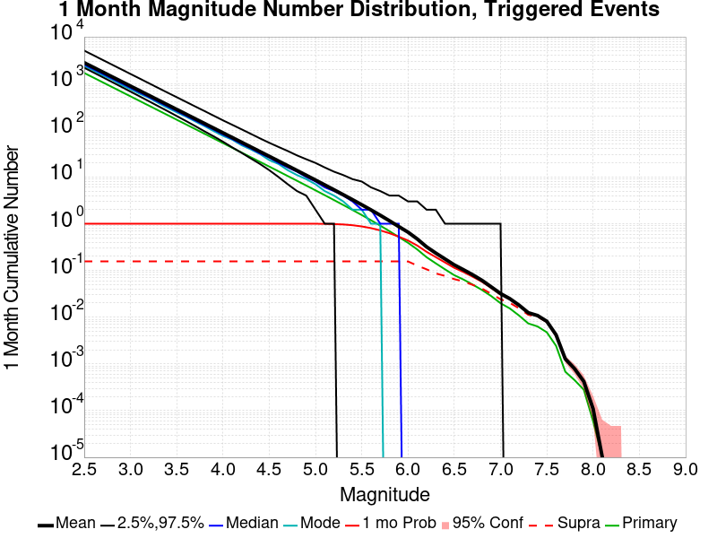
| Mag | Mean | 2.5 %ile | 97.5 %ile | Median | Mode | 1 mo Probability | 1 mo Supra-Seis Prob | Primary Aftershocks Mean |
|---|---|---|---|---|---|---|---|---|
| M≥2.5 | 2794.060 | 2180.000 | 5072.000 | 2549.000 | 2373.000 | 1.000 (100.00%) | 0.156 (15.60%) | 1685.042 |
| M≥2.6 | 2219.278 | 1726.000 | 4027.000 | 2025.000 | 1912.000 | 1.000 (100.00%) | 0.156 (15.60%) | 1338.405 |
| M≥2.7 | 1762.824 | 1366.000 | 3199.000 | 1610.000 | 1495.000 | 1.000 (100.00%) | 0.156 (15.60%) | 1063.148 |
| M≥2.8 | 1400.237 | 1080.000 | 2543.000 | 1279.000 | 1219.000 | 1.000 (100.00%) | 0.156 (15.60%) | 844.459 |
| M≥2.9 | 1112.218 | 853.000 | 2022.000 | 1017.000 | 939.000 | 1.000 (100.00%) | 0.156 (15.60%) | 670.763 |
| M≥3 | 883.362 | 674.000 | 1606.000 | 808.000 | 758.000 | 1.000 (100.00%) | 0.156 (15.60%) | 532.697 |
| M≥3.1 | 701.647 | 531.000 | 1277.000 | 642.000 | 605.000 | 1.000 (100.00%) | 0.156 (15.60%) | 423.101 |
| M≥3.2 | 557.351 | 418.000 | 1015.000 | 511.000 | 494.000 | 1.000 (100.00%) | 0.156 (15.60%) | 336.053 |
| M≥3.3 | 442.634 | 328.000 | 805.000 | 406.000 | 385.000 | 1.000 (100.00%) | 0.156 (15.60%) | 266.884 |
| M≥3.4 | 351.504 | 258.000 | 640.000 | 323.000 | 303.000 | 1.000 (100.00%) | 0.156 (15.60%) | 211.937 |
| M≥3.5 | 279.175 | 202.000 | 510.000 | 257.000 | 243.000 | 1.000 (100.00%) | 0.156 (15.60%) | 168.331 |
| M≥3.6 | 221.734 | 158.000 | 406.000 | 204.000 | 196.000 | 1.000 (100.00%) | 0.156 (15.60%) | 133.691 |
| M≥3.7 | 176.074 | 123.000 | 323.000 | 162.000 | 155.000 | 1.000 (100.00%) | 0.156 (15.60%) | 106.166 |
| M≥3.8 | 139.823 | 95.000 | 258.000 | 129.000 | 123.000 | 1.000 (100.00%) | 0.156 (15.60%) | 84.300 |
| M≥3.9 | 111.023 | 74.000 | 205.000 | 103.000 | 96.000 | 1.000 (100.00%) | 0.156 (15.60%) | 66.928 |
| M≥4 | 88.141 | 57.000 | 163.000 | 81.000 | 76.000 | 1.000 (100.00%) | 0.156 (15.60%) | 53.132 |
| M≥4.1 | 69.966 | 43.000 | 131.000 | 65.000 | 63.000 | 1.000 (100.00%) | 0.156 (15.60%) | 42.175 |
| M≥4.2 | 55.532 | 33.000 | 105.000 | 51.000 | 48.000 | 1.000 (100.00%) | 0.156 (15.60%) | 33.472 |
| M≥4.3 | 44.054 | 25.000 | 84.000 | 41.000 | 39.000 | 1.000 (100.00%) | 0.156 (15.60%) | 26.557 |
| M≥4.4 | 34.945 | 19.000 | 67.000 | 32.000 | 31.000 | 1.000 (100.00%) | 0.156 (15.60%) | 21.074 |
| M≥4.5 | 27.719 | 14.000 | 54.000 | 26.000 | 23.000 | 1.000 (100.00%) | 0.156 (15.60%) | 16.717 |
| M≥4.6 | 21.974 | 10.000 | 44.000 | 20.000 | 19.000 | 1.000 (100.00%) | 0.156 (15.60%) | 13.255 |
| M≥4.7 | 17.396 | 7.000 | 36.000 | 16.000 | 14.000 | 1.000 (100.00%) | 0.156 (15.60%) | 10.489 |
| M≥4.8 | 13.768 | 5.000 | 29.000 | 13.000 | 11.000 | 1.000 (100.00%) | 0.156 (15.60%) | 8.302 |
| M≥4.9 | 10.880 | 4.000 | 24.000 | 10.000 | 9.000 | 1.000 (99.98%) | 0.156 (15.60%) | 6.562 |
| M≥5 | 8.590 | 2.000 | 20.000 | 8.000 | 7.000 | 0.999 (99.87%) | 0.156 (15.60%) | 5.182 |
| M≥5.1 | 6.767 | 1.000 | 16.000 | 6.000 | 5.000 | 0.995 (99.46%) | 0.156 (15.60%) | 4.082 |
| M≥5.2 | 5.324 | 1.000 | 13.000 | 5.000 | 4.000 | 0.984 (98.45%) | 0.156 (15.60%) | 3.209 |
| M≥5.3 | 4.178 | 0.000 | 11.000 | 4.000 | 3.000 | 0.965 (96.45%) | 0.156 (15.60%) | 2.517 |
| M≥5.4 | 3.269 | 0.000 | 9.000 | 3.000 | 2.000 | 0.929 (92.91%) | 0.156 (15.60%) | 1.970 |
| M≥5.5 | 2.546 | 0.000 | 8.000 | 2.000 | 2.000 | 0.875 (87.53%) | 0.156 (15.60%) | 1.533 |
| M≥5.6 | 1.973 | 0.000 | 6.000 | 2.000 | 1.000 | 0.805 (80.48%) | 0.156 (15.60%) | 1.186 |
| M≥5.7 | 1.516 | 0.000 | 5.000 | 1.000 | 1.000 | 0.720 (71.99%) | 0.156 (15.60%) | 0.910 |
| M≥5.8 | 1.154 | 0.000 | 4.000 | 1.000 | 0.000 | 0.626 (62.57%) | 0.156 (15.60%) | 0.692 |
| M≥5.9 | 0.868 | 0.000 | 4.000 | 1.000 | 0.000 | 0.528 (52.84%) | 0.156 (15.59%) | 0.519 |
| M≥6 | 0.660 | 0.000 | 3.000 | 0.000 | 0.000 | 0.437 (43.70%) | 0.156 (15.58%) | 0.391 |
| M≥6.1 | 0.471 | 0.000 | 3.000 | 0.000 | 0.000 | 0.341 (34.09%) | 0.127 (12.68%) | 0.281 |
| M≥6.2 | 0.321 | 0.000 | 2.000 | 0.000 | 0.000 | 0.251 (25.11%) | 0.106 (10.59%) | 0.192 |
| M≥6.3 | 0.235 | 0.000 | 2.000 | 0.000 | 0.000 | 0.193 (19.28%) | 0.086 (8.64%) | 0.142 |
| M≥6.4 | 0.176 | 0.000 | 1.000 | 0.000 | 0.000 | 0.148 (14.82%) | 0.076 (7.64%) | 0.106 |
| M≥6.5 | 0.131 | 0.000 | 1.000 | 0.000 | 0.000 | 0.114 (11.38%) | 0.065 (6.52%) | 0.079 |
| M≥6.6 | 0.103 | 0.000 | 1.000 | 0.000 | 0.000 | 0.092 (9.24%) | 0.058 (5.81%) | 0.064 |
| M≥6.7 | 0.081 | 0.000 | 1.000 | 0.000 | 0.000 | 0.073 (7.32%) | 0.049 (4.90%) | 0.050 |
| M≥6.8 | 0.061 | 0.000 | 1.000 | 0.000 | 0.000 | 0.057 (5.71%) | 0.041 (4.09%) | 0.038 |
| M≥6.9 | 0.044 | 0.000 | 1.000 | 0.000 | 0.000 | 0.042 (4.22%) | 0.032 (3.16%) | 0.028 |
| M≥7 | 0.032 | 0.000 | 1.000 | 0.000 | 0.000 | 0.031 (3.06%) | 0.024 (2.42%) | 0.020 |
| M≥7.1 | 0.025 | 0.000 | 0.000 | 0.000 | 0.000 | 0.024 (2.42%) | 0.020 (2.03%) | 0.015 |
| M≥7.2 | 0.018 | 0.000 | 0.000 | 0.000 | 0.000 | 0.018 (1.77%) | 0.015 (1.54%) | 0.011 |
| M≥7.3 | 0.012 | 0.000 | 0.000 | 0.000 | 0.000 | 0.012 (1.22%) | 0.011 (1.12%) | 7.34E-3 |
| M≥7.4 | 0.011 | 0.000 | 0.000 | 0.000 | 0.000 | 0.011 (1.06%) | 0.010 (1.02%) | 6.33E-3 |
| M≥7.5 | 8.15E-3 | 0.000 | 0.000 | 0.000 | 0.000 | 8.05E-3 (0.80%) | 7.92E-3 (0.79%) | 4.75E-3 |
| M≥7.6 | 4.19E-3 | 0.000 | 0.000 | 0.000 | 0.000 | 4.16E-3 (0.42%) | 4.11E-3 (0.41%) | 2.44E-3 |
| M≥7.7 | 1.28E-3 | 0.000 | 0.000 | 0.000 | 0.000 | 1.26E-3 (0.13%) | 1.23E-3 (0.12%) | 6.80E-4 |
| M≥7.8 | 7.90E-4 | 0.000 | 0.000 | 0.000 | 0.000 | 7.80E-4 (0.08%) | 7.70E-4 (0.08%) | 4.50E-4 |
| M≥7.9 | 4.20E-4 | 0.000 | 0.000 | 0.000 | 0.000 | 4.20E-4 (0.04%) | 4.20E-4 (0.04%) | 2.80E-4 |
| M≥8 | 1.10E-4 | 0.000 | 0.000 | 0.000 | 0.000 | 1.10E-4 (0.01%) | 1.10E-4 (0.01%) | 6.00E-5 |
| M≥8.1 | 1.00E-5 | 0.000 | 0.000 | 0.000 | 0.000 | 1.00E-5 (0.00%) | 1.00E-5 (0.00%) | 1.00E-5 |
| M≥8.2 | 0.000 | 0.000 | 0.000 | 0.000 | 0.000 | 0.000 (0.00%) | 0.000 (0.00%) | 0.000 |
| M≥8.3 | 0.000 | 0.000 | 0.000 | 0.000 | 0.000 | 0.000 (0.00%) | 0.000 (0.00%) | 0.000 |
| M≥8.4 | 0.000 | 0.000 | 0.000 | 0.000 | 0.000 | 0.000 (0.00%) | 0.000 (0.00%) | 0.000 |
| M≥8.5 | 0.000 | 0.000 | 0.000 | 0.000 | 0.000 | 0.000 (0.00%) | 0.000 (0.00%) | 0.000 |
| M≥8.6 | 0.000 | 0.000 | 0.000 | 0.000 | 0.000 | 0.000 (0.00%) | 0.000 (0.00%) | 0.000 |
| M≥8.7 | 0.000 | 0.000 | 0.000 | 0.000 | 0.000 | 0.000 (0.00%) | 0.000 (0.00%) | 0.000 |
| M≥8.8 | 0.000 | 0.000 | 0.000 | 0.000 | 0.000 | 0.000 (0.00%) | 0.000 (0.00%) | 0.000 |
| M≥8.9 | 0.000 | 0.000 | 0.000 | 0.000 | 0.000 | 0.000 (0.00%) | 0.000 (0.00%) | 0.000 |
| M≥9 | 0.000 | 0.000 | 0.000 | 0.000 | 0.000 | 0.000 (0.00%) | 0.000 (0.00%) | 0.000 |
Legend

| Mag | Mean | 2.5 %ile | 97.5 %ile | Median | Mode | 1 wk Probability | 1 wk Supra-Seis Prob | Primary Aftershocks Mean |
|---|---|---|---|---|---|---|---|---|
| M≥2.5 | 2164.054 | 1748.000 | 3645.000 | 2002.000 | 1959.000 | 1.000 (100.00%) | 0.123 (12.28%) | 1428.062 |
| M≥2.6 | 1718.942 | 1383.000 | 2900.000 | 1591.000 | 1535.000 | 1.000 (100.00%) | 0.123 (12.28%) | 1134.312 |
| M≥2.7 | 1365.402 | 1093.000 | 2302.000 | 1265.000 | 1193.000 | 1.000 (100.00%) | 0.123 (12.28%) | 901.033 |
| M≥2.8 | 1084.573 | 864.000 | 1833.000 | 1005.000 | 958.000 | 1.000 (100.00%) | 0.123 (12.28%) | 715.713 |
| M≥2.9 | 861.475 | 682.000 | 1455.000 | 799.000 | 757.000 | 1.000 (100.00%) | 0.123 (12.28%) | 568.483 |
| M≥3 | 684.222 | 537.000 | 1157.000 | 635.000 | 606.000 | 1.000 (100.00%) | 0.123 (12.28%) | 451.479 |
| M≥3.1 | 543.478 | 423.000 | 920.000 | 505.000 | 490.000 | 1.000 (100.00%) | 0.123 (12.28%) | 358.603 |
| M≥3.2 | 431.709 | 332.000 | 731.000 | 402.000 | 387.000 | 1.000 (100.00%) | 0.123 (12.28%) | 284.819 |
| M≥3.3 | 342.865 | 261.000 | 581.000 | 319.000 | 304.000 | 1.000 (100.00%) | 0.123 (12.28%) | 226.212 |
| M≥3.4 | 272.268 | 204.000 | 462.000 | 254.000 | 248.000 | 1.000 (100.00%) | 0.123 (12.28%) | 179.636 |
| M≥3.5 | 216.236 | 159.000 | 369.000 | 202.000 | 191.000 | 1.000 (100.00%) | 0.123 (12.28%) | 142.677 |
| M≥3.6 | 171.756 | 124.000 | 293.000 | 160.000 | 153.000 | 1.000 (100.00%) | 0.123 (12.28%) | 113.322 |
| M≥3.7 | 136.387 | 97.000 | 233.000 | 128.000 | 121.000 | 1.000 (100.00%) | 0.123 (12.28%) | 89.991 |
| M≥3.8 | 108.303 | 75.000 | 187.000 | 101.000 | 97.000 | 1.000 (100.00%) | 0.123 (12.28%) | 71.457 |
| M≥3.9 | 85.990 | 58.000 | 149.000 | 81.000 | 78.000 | 1.000 (100.00%) | 0.123 (12.28%) | 56.732 |
| M≥4 | 68.262 | 44.000 | 119.000 | 64.000 | 61.000 | 1.000 (100.00%) | 0.123 (12.28%) | 45.032 |
| M≥4.1 | 54.192 | 34.000 | 95.000 | 51.000 | 48.000 | 1.000 (100.00%) | 0.123 (12.28%) | 35.751 |
| M≥4.2 | 43.013 | 25.000 | 76.000 | 40.000 | 38.000 | 1.000 (100.00%) | 0.123 (12.28%) | 28.373 |
| M≥4.3 | 34.122 | 19.000 | 62.000 | 32.000 | 31.000 | 1.000 (100.00%) | 0.123 (12.28%) | 22.510 |
| M≥4.4 | 27.068 | 14.000 | 50.000 | 25.000 | 24.000 | 1.000 (100.00%) | 0.123 (12.28%) | 17.862 |
| M≥4.5 | 21.471 | 10.000 | 40.000 | 20.000 | 19.000 | 1.000 (100.00%) | 0.123 (12.28%) | 14.168 |
| M≥4.6 | 17.017 | 8.000 | 33.000 | 16.000 | 15.000 | 1.000 (100.00%) | 0.123 (12.28%) | 11.230 |
| M≥4.7 | 13.468 | 5.000 | 27.000 | 13.000 | 12.000 | 1.000 (100.00%) | 0.123 (12.28%) | 8.885 |
| M≥4.8 | 10.660 | 4.000 | 22.000 | 10.000 | 9.000 | 1.000 (99.99%) | 0.123 (12.28%) | 7.035 |
| M≥4.9 | 8.422 | 2.000 | 18.000 | 8.000 | 7.000 | 0.999 (99.91%) | 0.123 (12.28%) | 5.562 |
| M≥5 | 6.650 | 1.000 | 15.000 | 6.000 | 5.000 | 0.996 (99.58%) | 0.123 (12.28%) | 4.392 |
| M≥5.1 | 5.239 | 1.000 | 12.000 | 5.000 | 4.000 | 0.986 (98.64%) | 0.123 (12.28%) | 3.460 |
| M≥5.2 | 4.118 | 0.000 | 10.000 | 4.000 | 3.000 | 0.967 (96.68%) | 0.123 (12.28%) | 2.720 |
| M≥5.3 | 3.231 | 0.000 | 9.000 | 3.000 | 2.000 | 0.933 (93.34%) | 0.123 (12.28%) | 2.132 |
| M≥5.4 | 2.527 | 0.000 | 7.000 | 2.000 | 2.000 | 0.882 (88.21%) | 0.123 (12.28%) | 1.668 |
| M≥5.5 | 1.967 | 0.000 | 6.000 | 2.000 | 1.000 | 0.814 (81.37%) | 0.123 (12.28%) | 1.298 |
| M≥5.6 | 1.523 | 0.000 | 5.000 | 1.000 | 1.000 | 0.732 (73.17%) | 0.123 (12.28%) | 1.004 |
| M≥5.7 | 1.169 | 0.000 | 4.000 | 1.000 | 0.000 | 0.640 (63.97%) | 0.123 (12.28%) | 0.770 |
| M≥5.8 | 0.890 | 0.000 | 4.000 | 1.000 | 0.000 | 0.544 (54.41%) | 0.123 (12.28%) | 0.584 |
| M≥5.9 | 0.669 | 0.000 | 3.000 | 0.000 | 0.000 | 0.451 (45.05%) | 0.123 (12.28%) | 0.438 |
| M≥6 | 0.508 | 0.000 | 3.000 | 0.000 | 0.000 | 0.366 (36.57%) | 0.123 (12.27%) | 0.331 |
| M≥6.1 | 0.363 | 0.000 | 2.000 | 0.000 | 0.000 | 0.281 (28.07%) | 0.100 (10.03%) | 0.238 |
| M≥6.2 | 0.246 | 0.000 | 2.000 | 0.000 | 0.000 | 0.203 (20.30%) | 0.084 (8.36%) | 0.163 |
| M≥6.3 | 0.182 | 0.000 | 1.000 | 0.000 | 0.000 | 0.155 (15.53%) | 0.069 (6.85%) | 0.121 |
| M≥6.4 | 0.136 | 0.000 | 1.000 | 0.000 | 0.000 | 0.119 (11.88%) | 0.061 (6.07%) | 0.090 |
| M≥6.5 | 0.102 | 0.000 | 1.000 | 0.000 | 0.000 | 0.091 (9.08%) | 0.052 (5.20%) | 0.068 |
| M≥6.6 | 0.080 | 0.000 | 1.000 | 0.000 | 0.000 | 0.073 (7.34%) | 0.046 (4.63%) | 0.054 |
| M≥6.7 | 0.063 | 0.000 | 1.000 | 0.000 | 0.000 | 0.058 (5.81%) | 0.039 (3.92%) | 0.042 |
| M≥6.8 | 0.048 | 0.000 | 1.000 | 0.000 | 0.000 | 0.045 (4.50%) | 0.033 (3.25%) | 0.032 |
| M≥6.9 | 0.035 | 0.000 | 1.000 | 0.000 | 0.000 | 0.033 (3.31%) | 0.025 (2.52%) | 0.024 |
| M≥7 | 0.025 | 0.000 | 0.000 | 0.000 | 0.000 | 0.024 (2.42%) | 0.019 (1.93%) | 0.017 |
| M≥7.1 | 0.020 | 0.000 | 0.000 | 0.000 | 0.000 | 0.019 (1.92%) | 0.016 (1.63%) | 0.013 |
| M≥7.2 | 0.014 | 0.000 | 0.000 | 0.000 | 0.000 | 0.014 (1.39%) | 0.012 (1.23%) | 9.29E-3 |
| M≥7.3 | 9.76E-3 | 0.000 | 0.000 | 0.000 | 0.000 | 9.63E-3 (0.96%) | 8.88E-3 (0.89%) | 6.31E-3 |
| M≥7.4 | 8.54E-3 | 0.000 | 0.000 | 0.000 | 0.000 | 8.43E-3 (0.84%) | 8.13E-3 (0.81%) | 5.49E-3 |
| M≥7.5 | 6.40E-3 | 0.000 | 0.000 | 0.000 | 0.000 | 6.33E-3 (0.63%) | 6.25E-3 (0.62%) | 4.12E-3 |
| M≥7.6 | 3.30E-3 | 0.000 | 0.000 | 0.000 | 0.000 | 3.29E-3 (0.33%) | 3.25E-3 (0.33%) | 2.05E-3 |
| M≥7.7 | 9.50E-4 | 0.000 | 0.000 | 0.000 | 0.000 | 9.50E-4 (0.10%) | 9.30E-4 (0.09%) | 5.50E-4 |
| M≥7.8 | 5.60E-4 | 0.000 | 0.000 | 0.000 | 0.000 | 5.60E-4 (0.06%) | 5.50E-4 (0.06%) | 3.30E-4 |
| M≥7.9 | 3.00E-4 | 0.000 | 0.000 | 0.000 | 0.000 | 3.00E-4 (0.03%) | 3.00E-4 (0.03%) | 2.00E-4 |
| M≥8 | 9.00E-5 | 0.000 | 0.000 | 0.000 | 0.000 | 9.00E-5 (0.01%) | 9.00E-5 (0.01%) | 4.00E-5 |
| M≥8.1 | 1.00E-5 | 0.000 | 0.000 | 0.000 | 0.000 | 1.00E-5 (0.00%) | 1.00E-5 (0.00%) | 1.00E-5 |
| M≥8.2 | 0.000 | 0.000 | 0.000 | 0.000 | 0.000 | 0.000 (0.00%) | 0.000 (0.00%) | 0.000 |
| M≥8.3 | 0.000 | 0.000 | 0.000 | 0.000 | 0.000 | 0.000 (0.00%) | 0.000 (0.00%) | 0.000 |
| M≥8.4 | 0.000 | 0.000 | 0.000 | 0.000 | 0.000 | 0.000 (0.00%) | 0.000 (0.00%) | 0.000 |
| M≥8.5 | 0.000 | 0.000 | 0.000 | 0.000 | 0.000 | 0.000 (0.00%) | 0.000 (0.00%) | 0.000 |
| M≥8.6 | 0.000 | 0.000 | 0.000 | 0.000 | 0.000 | 0.000 (0.00%) | 0.000 (0.00%) | 0.000 |
| M≥8.7 | 0.000 | 0.000 | 0.000 | 0.000 | 0.000 | 0.000 (0.00%) | 0.000 (0.00%) | 0.000 |
| M≥8.8 | 0.000 | 0.000 | 0.000 | 0.000 | 0.000 | 0.000 (0.00%) | 0.000 (0.00%) | 0.000 |
| M≥8.9 | 0.000 | 0.000 | 0.000 | 0.000 | 0.000 | 0.000 (0.00%) | 0.000 (0.00%) | 0.000 |
| M≥9 | 0.000 | 0.000 | 0.000 | 0.000 | 0.000 | 0.000 (0.00%) | 0.000 (0.00%) | 0.000 |
Legend
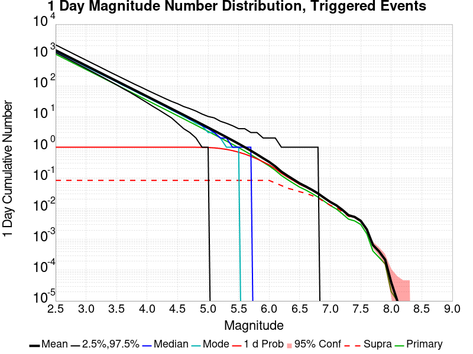
| Mag | Mean | 2.5 %ile | 97.5 %ile | Median | Mode | 1 d Probability | 1 d Supra-Seis Prob | Primary Aftershocks Mean |
|---|---|---|---|---|---|---|---|---|
| M≥2.5 | 1425.588 | 1201.000 | 2140.000 | 1348.000 | 1312.000 | 1.000 (100.00%) | 0.083 (8.33%) | 1063.773 |
| M≥2.6 | 1132.280 | 949.000 | 1700.000 | 1071.000 | 1043.000 | 1.000 (100.00%) | 0.083 (8.33%) | 844.897 |
| M≥2.7 | 899.388 | 749.000 | 1351.000 | 851.000 | 829.000 | 1.000 (100.00%) | 0.083 (8.33%) | 671.135 |
| M≥2.8 | 714.381 | 590.000 | 1074.000 | 677.000 | 663.000 | 1.000 (100.00%) | 0.083 (8.33%) | 533.094 |
| M≥2.9 | 567.464 | 465.000 | 855.000 | 538.000 | 526.000 | 1.000 (100.00%) | 0.083 (8.33%) | 423.439 |
| M≥3 | 450.707 | 365.000 | 681.000 | 428.000 | 411.000 | 1.000 (100.00%) | 0.083 (8.33%) | 336.289 |
| M≥3.1 | 358.015 | 287.000 | 541.000 | 340.000 | 327.000 | 1.000 (100.00%) | 0.083 (8.33%) | 267.118 |
| M≥3.2 | 284.368 | 225.000 | 432.000 | 271.000 | 261.000 | 1.000 (100.00%) | 0.083 (8.33%) | 212.148 |
| M≥3.3 | 225.835 | 176.000 | 343.000 | 215.000 | 209.000 | 1.000 (100.00%) | 0.083 (8.33%) | 168.483 |
| M≥3.4 | 179.326 | 137.000 | 272.000 | 171.000 | 168.000 | 1.000 (100.00%) | 0.083 (8.33%) | 133.783 |
| M≥3.5 | 142.432 | 107.000 | 218.000 | 136.000 | 133.000 | 1.000 (100.00%) | 0.083 (8.33%) | 106.267 |
| M≥3.6 | 113.145 | 82.000 | 174.000 | 108.000 | 104.000 | 1.000 (100.00%) | 0.083 (8.33%) | 84.415 |
| M≥3.7 | 89.841 | 64.000 | 139.000 | 86.000 | 84.000 | 1.000 (100.00%) | 0.083 (8.33%) | 67.031 |
| M≥3.8 | 71.327 | 49.000 | 111.000 | 68.000 | 66.000 | 1.000 (100.00%) | 0.083 (8.33%) | 53.218 |
| M≥3.9 | 56.630 | 37.000 | 90.000 | 54.000 | 52.000 | 1.000 (100.00%) | 0.083 (8.33%) | 42.250 |
| M≥4 | 44.960 | 28.000 | 72.000 | 43.000 | 42.000 | 1.000 (100.00%) | 0.083 (8.33%) | 33.536 |
| M≥4.1 | 35.695 | 21.000 | 58.000 | 34.000 | 33.000 | 1.000 (100.00%) | 0.083 (8.33%) | 26.622 |
| M≥4.2 | 28.331 | 16.000 | 47.000 | 27.000 | 26.000 | 1.000 (100.00%) | 0.083 (8.33%) | 21.130 |
| M≥4.3 | 22.481 | 12.000 | 38.000 | 21.000 | 21.000 | 1.000 (100.00%) | 0.083 (8.33%) | 16.766 |
| M≥4.4 | 17.835 | 9.000 | 31.000 | 17.000 | 16.000 | 1.000 (100.00%) | 0.083 (8.33%) | 13.305 |
| M≥4.5 | 14.139 | 6.000 | 26.000 | 13.000 | 13.000 | 1.000 (100.00%) | 0.083 (8.33%) | 10.550 |
| M≥4.6 | 11.208 | 4.000 | 21.000 | 11.000 | 10.000 | 1.000 (99.99%) | 0.083 (8.33%) | 8.363 |
| M≥4.7 | 8.871 | 3.000 | 18.000 | 8.000 | 8.000 | 0.999 (99.94%) | 0.083 (8.33%) | 6.615 |
| M≥4.8 | 7.023 | 2.000 | 15.000 | 7.000 | 6.000 | 0.998 (99.77%) | 0.083 (8.33%) | 5.238 |
| M≥4.9 | 5.550 | 1.000 | 12.000 | 5.000 | 5.000 | 0.992 (99.21%) | 0.083 (8.33%) | 4.140 |
| M≥5 | 4.381 | 1.000 | 10.000 | 4.000 | 3.000 | 0.978 (97.79%) | 0.083 (8.33%) | 3.269 |
| M≥5.1 | 3.450 | 0.000 | 9.000 | 3.000 | 3.000 | 0.951 (95.12%) | 0.083 (8.33%) | 2.573 |
| M≥5.2 | 2.708 | 0.000 | 7.000 | 2.000 | 2.000 | 0.908 (90.81%) | 0.083 (8.33%) | 2.021 |
| M≥5.3 | 2.127 | 0.000 | 6.000 | 2.000 | 1.000 | 0.849 (84.90%) | 0.083 (8.33%) | 1.585 |
| M≥5.4 | 1.662 | 0.000 | 5.000 | 1.000 | 1.000 | 0.775 (77.46%) | 0.083 (8.33%) | 1.240 |
| M≥5.5 | 1.295 | 0.000 | 4.000 | 1.000 | 1.000 | 0.689 (68.89%) | 0.083 (8.33%) | 0.966 |
| M≥5.6 | 1.002 | 0.000 | 4.000 | 1.000 | 0.000 | 0.598 (59.77%) | 0.083 (8.33%) | 0.748 |
| M≥5.7 | 0.770 | 0.000 | 3.000 | 1.000 | 0.000 | 0.506 (50.56%) | 0.083 (8.33%) | 0.573 |
| M≥5.8 | 0.585 | 0.000 | 3.000 | 0.000 | 0.000 | 0.417 (41.70%) | 0.083 (8.33%) | 0.435 |
| M≥5.9 | 0.439 | 0.000 | 2.000 | 0.000 | 0.000 | 0.336 (33.55%) | 0.083 (8.32%) | 0.326 |
| M≥6 | 0.333 | 0.000 | 2.000 | 0.000 | 0.000 | 0.266 (26.62%) | 0.083 (8.32%) | 0.245 |
| M≥6.1 | 0.238 | 0.000 | 2.000 | 0.000 | 0.000 | 0.201 (20.06%) | 0.069 (6.87%) | 0.177 |
| M≥6.2 | 0.161 | 0.000 | 1.000 | 0.000 | 0.000 | 0.142 (14.16%) | 0.057 (5.67%) | 0.120 |
| M≥6.3 | 0.118 | 0.000 | 1.000 | 0.000 | 0.000 | 0.107 (10.67%) | 0.046 (4.64%) | 0.089 |
| M≥6.4 | 0.089 | 0.000 | 1.000 | 0.000 | 0.000 | 0.081 (8.13%) | 0.041 (4.14%) | 0.066 |
| M≥6.5 | 0.067 | 0.000 | 1.000 | 0.000 | 0.000 | 0.062 (6.16%) | 0.036 (3.56%) | 0.050 |
| M≥6.6 | 0.053 | 0.000 | 1.000 | 0.000 | 0.000 | 0.050 (4.99%) | 0.032 (3.18%) | 0.040 |
| M≥6.7 | 0.041 | 0.000 | 1.000 | 0.000 | 0.000 | 0.039 (3.93%) | 0.027 (2.68%) | 0.031 |
| M≥6.8 | 0.031 | 0.000 | 1.000 | 0.000 | 0.000 | 0.030 (3.02%) | 0.022 (2.22%) | 0.024 |
| M≥6.9 | 0.023 | 0.000 | 0.000 | 0.000 | 0.000 | 0.022 (2.20%) | 0.017 (1.70%) | 0.018 |
| M≥7 | 0.017 | 0.000 | 0.000 | 0.000 | 0.000 | 0.016 (1.62%) | 0.013 (1.30%) | 0.013 |
| M≥7.1 | 0.013 | 0.000 | 0.000 | 0.000 | 0.000 | 0.013 (1.27%) | 0.011 (1.09%) | 9.82E-3 |
| M≥7.2 | 9.14E-3 | 0.000 | 0.000 | 0.000 | 0.000 | 9.03E-3 (0.90%) | 7.93E-3 (0.79%) | 6.80E-3 |
| M≥7.3 | 6.15E-3 | 0.000 | 0.000 | 0.000 | 0.000 | 6.10E-3 (0.61%) | 5.65E-3 (0.56%) | 4.57E-3 |
| M≥7.4 | 5.39E-3 | 0.000 | 0.000 | 0.000 | 0.000 | 5.34E-3 (0.53%) | 5.17E-3 (0.52%) | 4.01E-3 |
| M≥7.5 | 4.04E-3 | 0.000 | 0.000 | 0.000 | 0.000 | 4.01E-3 (0.40%) | 3.96E-3 (0.40%) | 3.07E-3 |
| M≥7.6 | 2.12E-3 | 0.000 | 0.000 | 0.000 | 0.000 | 2.12E-3 (0.21%) | 2.09E-3 (0.21%) | 1.52E-3 |
| M≥7.7 | 6.60E-4 | 0.000 | 0.000 | 0.000 | 0.000 | 6.60E-4 (0.07%) | 6.40E-4 (0.06%) | 4.20E-4 |
| M≥7.8 | 4.10E-4 | 0.000 | 0.000 | 0.000 | 0.000 | 4.10E-4 (0.04%) | 4.00E-4 (0.04%) | 2.60E-4 |
| M≥7.9 | 2.20E-4 | 0.000 | 0.000 | 0.000 | 0.000 | 2.20E-4 (0.02%) | 2.20E-4 (0.02%) | 1.60E-4 |
| M≥8 | 4.00E-5 | 0.000 | 0.000 | 0.000 | 0.000 | 4.00E-5 (0.00%) | 4.00E-5 (0.00%) | 2.00E-5 |
| M≥8.1 | 1.00E-5 | 0.000 | 0.000 | 0.000 | 0.000 | 1.00E-5 (0.00%) | 1.00E-5 (0.00%) | 1.00E-5 |
| M≥8.2 | 0.000 | 0.000 | 0.000 | 0.000 | 0.000 | 0.000 (0.00%) | 0.000 (0.00%) | 0.000 |
| M≥8.3 | 0.000 | 0.000 | 0.000 | 0.000 | 0.000 | 0.000 (0.00%) | 0.000 (0.00%) | 0.000 |
| M≥8.4 | 0.000 | 0.000 | 0.000 | 0.000 | 0.000 | 0.000 (0.00%) | 0.000 (0.00%) | 0.000 |
| M≥8.5 | 0.000 | 0.000 | 0.000 | 0.000 | 0.000 | 0.000 (0.00%) | 0.000 (0.00%) | 0.000 |
| M≥8.6 | 0.000 | 0.000 | 0.000 | 0.000 | 0.000 | 0.000 (0.00%) | 0.000 (0.00%) | 0.000 |
| M≥8.7 | 0.000 | 0.000 | 0.000 | 0.000 | 0.000 | 0.000 (0.00%) | 0.000 (0.00%) | 0.000 |
| M≥8.8 | 0.000 | 0.000 | 0.000 | 0.000 | 0.000 | 0.000 (0.00%) | 0.000 (0.00%) | 0.000 |
| M≥8.9 | 0.000 | 0.000 | 0.000 | 0.000 | 0.000 | 0.000 (0.00%) | 0.000 (0.00%) | 0.000 |
| M≥9 | 0.000 | 0.000 | 0.000 | 0.000 | 0.000 | 0.000 (0.00%) | 0.000 (0.00%) | 0.000 |
Legend

| Mag | Mean | 2.5 %ile | 97.5 %ile | Median | Mode | 1 hr Probability | 1 hr Supra-Seis Prob | Primary Aftershocks Mean |
|---|---|---|---|---|---|---|---|---|
| M≥2.5 | 504.879 | 444.000 | 602.000 | 496.000 | 492.000 | 1.000 (100.00%) | 0.030 (3.04%) | 457.773 |
| M≥2.6 | 400.992 | 349.000 | 481.000 | 394.000 | 392.000 | 1.000 (100.00%) | 0.030 (3.04%) | 363.577 |
| M≥2.7 | 318.500 | 274.000 | 384.000 | 313.000 | 312.000 | 1.000 (100.00%) | 0.030 (3.04%) | 288.787 |
| M≥2.8 | 252.981 | 214.000 | 307.000 | 249.000 | 247.000 | 1.000 (100.00%) | 0.030 (3.04%) | 229.380 |
| M≥2.9 | 200.970 | 167.000 | 246.000 | 198.000 | 196.000 | 1.000 (100.00%) | 0.030 (3.04%) | 182.210 |
| M≥3 | 159.590 | 130.000 | 198.000 | 157.000 | 157.000 | 1.000 (100.00%) | 0.030 (3.04%) | 144.690 |
| M≥3.1 | 126.772 | 101.000 | 160.000 | 125.000 | 122.000 | 1.000 (100.00%) | 0.030 (3.04%) | 114.942 |
| M≥3.2 | 100.702 | 78.000 | 129.000 | 99.000 | 98.000 | 1.000 (100.00%) | 0.030 (3.04%) | 91.294 |
| M≥3.3 | 79.968 | 60.000 | 104.000 | 79.000 | 79.000 | 1.000 (100.00%) | 0.030 (3.04%) | 72.496 |
| M≥3.4 | 63.496 | 46.000 | 84.000 | 62.000 | 60.000 | 1.000 (100.00%) | 0.030 (3.04%) | 57.564 |
| M≥3.5 | 50.458 | 35.000 | 69.000 | 50.000 | 48.000 | 1.000 (100.00%) | 0.030 (3.04%) | 45.745 |
| M≥3.6 | 40.082 | 27.000 | 56.000 | 39.000 | 39.000 | 1.000 (100.00%) | 0.030 (3.04%) | 36.338 |
| M≥3.7 | 31.826 | 20.000 | 46.000 | 31.000 | 30.000 | 1.000 (100.00%) | 0.030 (3.04%) | 28.849 |
| M≥3.8 | 25.269 | 15.000 | 38.000 | 25.000 | 24.000 | 1.000 (100.00%) | 0.030 (3.04%) | 22.904 |
| M≥3.9 | 20.064 | 11.000 | 31.000 | 20.000 | 19.000 | 1.000 (100.00%) | 0.030 (3.04%) | 18.187 |
| M≥4 | 15.926 | 8.000 | 26.000 | 16.000 | 15.000 | 1.000 (100.00%) | 0.030 (3.04%) | 14.436 |
| M≥4.1 | 12.641 | 6.000 | 21.000 | 12.000 | 12.000 | 1.000 (100.00%) | 0.030 (3.04%) | 11.459 |
| M≥4.2 | 10.031 | 4.000 | 18.000 | 10.000 | 9.000 | 1.000 (99.98%) | 0.030 (3.04%) | 9.094 |
| M≥4.3 | 7.961 | 3.000 | 15.000 | 8.000 | 7.000 | 0.999 (99.94%) | 0.030 (3.04%) | 7.217 |
| M≥4.4 | 6.316 | 2.000 | 12.000 | 6.000 | 6.000 | 0.997 (99.73%) | 0.030 (3.04%) | 5.726 |
| M≥4.5 | 5.010 | 1.000 | 10.000 | 5.000 | 4.000 | 0.991 (99.10%) | 0.030 (3.04%) | 4.542 |
| M≥4.6 | 3.972 | 1.000 | 9.000 | 4.000 | 3.000 | 0.976 (97.63%) | 0.030 (3.04%) | 3.600 |
| M≥4.7 | 3.142 | 0.000 | 7.000 | 3.000 | 3.000 | 0.949 (94.91%) | 0.030 (3.04%) | 2.847 |
| M≥4.8 | 2.487 | 0.000 | 6.000 | 2.000 | 2.000 | 0.906 (90.59%) | 0.030 (3.04%) | 2.253 |
| M≥4.9 | 1.966 | 0.000 | 5.000 | 2.000 | 1.000 | 0.846 (84.57%) | 0.030 (3.04%) | 1.781 |
| M≥5 | 1.555 | 0.000 | 5.000 | 1.000 | 1.000 | 0.773 (77.34%) | 0.030 (3.04%) | 1.410 |
| M≥5.1 | 1.224 | 0.000 | 4.000 | 1.000 | 1.000 | 0.690 (69.03%) | 0.030 (3.04%) | 1.109 |
| M≥5.2 | 0.959 | 0.000 | 3.000 | 1.000 | 0.000 | 0.602 (60.17%) | 0.030 (3.04%) | 0.870 |
| M≥5.3 | 0.753 | 0.000 | 3.000 | 1.000 | 0.000 | 0.515 (51.50%) | 0.030 (3.04%) | 0.682 |
| M≥5.4 | 0.587 | 0.000 | 3.000 | 0.000 | 0.000 | 0.432 (43.24%) | 0.030 (3.04%) | 0.532 |
| M≥5.5 | 0.457 | 0.000 | 2.000 | 0.000 | 0.000 | 0.357 (35.68%) | 0.030 (3.04%) | 0.414 |
| M≥5.6 | 0.353 | 0.000 | 2.000 | 0.000 | 0.000 | 0.290 (28.96%) | 0.030 (3.04%) | 0.320 |
| M≥5.7 | 0.271 | 0.000 | 2.000 | 0.000 | 0.000 | 0.231 (23.09%) | 0.030 (3.04%) | 0.245 |
| M≥5.8 | 0.206 | 0.000 | 1.000 | 0.000 | 0.000 | 0.182 (18.17%) | 0.030 (3.04%) | 0.186 |
| M≥5.9 | 0.154 | 0.000 | 1.000 | 0.000 | 0.000 | 0.140 (13.96%) | 0.030 (3.04%) | 0.139 |
| M≥6 | 0.116 | 0.000 | 1.000 | 0.000 | 0.000 | 0.108 (10.75%) | 0.030 (3.04%) | 0.105 |
| M≥6.1 | 0.084 | 0.000 | 1.000 | 0.000 | 0.000 | 0.079 (7.87%) | 0.025 (2.55%) | 0.076 |
| M≥6.2 | 0.057 | 0.000 | 1.000 | 0.000 | 0.000 | 0.054 (5.39%) | 0.021 (2.06%) | 0.051 |
| M≥6.3 | 0.042 | 0.000 | 1.000 | 0.000 | 0.000 | 0.040 (4.01%) | 0.017 (1.69%) | 0.038 |
| M≥6.4 | 0.031 | 0.000 | 1.000 | 0.000 | 0.000 | 0.030 (3.02%) | 0.015 (1.50%) | 0.028 |
| M≥6.5 | 0.024 | 0.000 | 0.000 | 0.000 | 0.000 | 0.023 (2.29%) | 0.013 (1.31%) | 0.021 |
| M≥6.6 | 0.019 | 0.000 | 0.000 | 0.000 | 0.000 | 0.018 (1.85%) | 0.012 (1.18%) | 0.017 |
| M≥6.7 | 0.015 | 0.000 | 0.000 | 0.000 | 0.000 | 0.015 (1.47%) | 0.010 (1.00%) | 0.013 |
| M≥6.8 | 0.011 | 0.000 | 0.000 | 0.000 | 0.000 | 0.011 (1.12%) | 8.32E-3 (0.83%) | 0.010 |
| M≥6.9 | 8.11E-3 | 0.000 | 0.000 | 0.000 | 0.000 | 8.05E-3 (0.80%) | 6.27E-3 (0.63%) | 7.37E-3 |
| M≥7 | 5.91E-3 | 0.000 | 0.000 | 0.000 | 0.000 | 5.86E-3 (0.59%) | 4.68E-3 (0.47%) | 5.44E-3 |
| M≥7.1 | 4.68E-3 | 0.000 | 0.000 | 0.000 | 0.000 | 4.67E-3 (0.47%) | 4.06E-3 (0.41%) | 4.31E-3 |
| M≥7.2 | 3.29E-3 | 0.000 | 0.000 | 0.000 | 0.000 | 3.29E-3 (0.33%) | 2.88E-3 (0.29%) | 3.01E-3 |
| M≥7.3 | 2.11E-3 | 0.000 | 0.000 | 0.000 | 0.000 | 2.11E-3 (0.21%) | 1.99E-3 (0.20%) | 1.89E-3 |
| M≥7.4 | 1.89E-3 | 0.000 | 0.000 | 0.000 | 0.000 | 1.89E-3 (0.19%) | 1.83E-3 (0.18%) | 1.71E-3 |
| M≥7.5 | 1.53E-3 | 0.000 | 0.000 | 0.000 | 0.000 | 1.53E-3 (0.15%) | 1.50E-3 (0.15%) | 1.37E-3 |
| M≥7.6 | 7.60E-4 | 0.000 | 0.000 | 0.000 | 0.000 | 7.60E-4 (0.08%) | 7.50E-4 (0.07%) | 6.40E-4 |
| M≥7.7 | 2.40E-4 | 0.000 | 0.000 | 0.000 | 0.000 | 2.40E-4 (0.02%) | 2.30E-4 (0.02%) | 1.70E-4 |
| M≥7.8 | 1.10E-4 | 0.000 | 0.000 | 0.000 | 0.000 | 1.10E-4 (0.01%) | 1.10E-4 (0.01%) | 7.00E-5 |
| M≥7.9 | 8.00E-5 | 0.000 | 0.000 | 0.000 | 0.000 | 8.00E-5 (0.01%) | 8.00E-5 (0.01%) | 6.00E-5 |
| M≥8 | 1.00E-5 | 0.000 | 0.000 | 0.000 | 0.000 | 1.00E-5 (0.00%) | 1.00E-5 (0.00%) | 0.000 |
| M≥8.1 | 0.000 | 0.000 | 0.000 | 0.000 | 0.000 | 0.000 (0.00%) | 0.000 (0.00%) | 0.000 |
| M≥8.2 | 0.000 | 0.000 | 0.000 | 0.000 | 0.000 | 0.000 (0.00%) | 0.000 (0.00%) | 0.000 |
| M≥8.3 | 0.000 | 0.000 | 0.000 | 0.000 | 0.000 | 0.000 (0.00%) | 0.000 (0.00%) | 0.000 |
| M≥8.4 | 0.000 | 0.000 | 0.000 | 0.000 | 0.000 | 0.000 (0.00%) | 0.000 (0.00%) | 0.000 |
| M≥8.5 | 0.000 | 0.000 | 0.000 | 0.000 | 0.000 | 0.000 (0.00%) | 0.000 (0.00%) | 0.000 |
| M≥8.6 | 0.000 | 0.000 | 0.000 | 0.000 | 0.000 | 0.000 (0.00%) | 0.000 (0.00%) | 0.000 |
| M≥8.7 | 0.000 | 0.000 | 0.000 | 0.000 | 0.000 | 0.000 (0.00%) | 0.000 (0.00%) | 0.000 |
| M≥8.8 | 0.000 | 0.000 | 0.000 | 0.000 | 0.000 | 0.000 (0.00%) | 0.000 (0.00%) | 0.000 |
| M≥8.9 | 0.000 | 0.000 | 0.000 | 0.000 | 0.000 | 0.000 (0.00%) | 0.000 (0.00%) | 0.000 |
| M≥9 | 0.000 | 0.000 | 0.000 | 0.000 | 0.000 | 0.000 (0.00%) | 0.000 (0.00%) | 0.000 |
These plots show how the probability of ruptures of various magnitudes within 100km of any scenario rupture changes over time

| Forecast Duration | UCERF3-ETAS [95% Conf] | UCERF3-ETAS Triggered Only | UCERF3-TD | UCERF3-ETAS/TD Gain | UCERF3-TI |
|---|---|---|---|---|---|
| 1 Hour | 0.771 [0.769 - 0.774] | 0.771 | 7.05E-5 | 10936.8 | 7.00E-5 |
| 1 Day | 0.977 [0.976 - 0.978] | 0.977 | 1.69E-3 | 577.84 | 1.68E-3 |
| 1 Week | 0.996 [0.995 - 0.996] | 0.996 | 0.012 | 84.52 | 0.012 |
| 1 Month | 0.999 [0.998 - 0.999] | 0.999 | 0.050 | 20.17 | 0.049 |
| 1 Year | 1.000 [1.000 - 1.000] | 1.000 | 0.461 | 2.17 | 0.459 |
| 10 Years | 1.000 [1.000 - 1.000] | 1.000 | 0.998 | 1 | 0.998 |
| 30 Years | 1.000 [1.000 - 1.000] * | * | 1.000 | 1 * | 1.000 |
| 100 Years | 1.000 [1.000 - 1.000] * | * | 1.000 | 1 * | 1.000 |
* forecast duration is longer than simulation length, only ETAS ruptures from the first 10 years are included
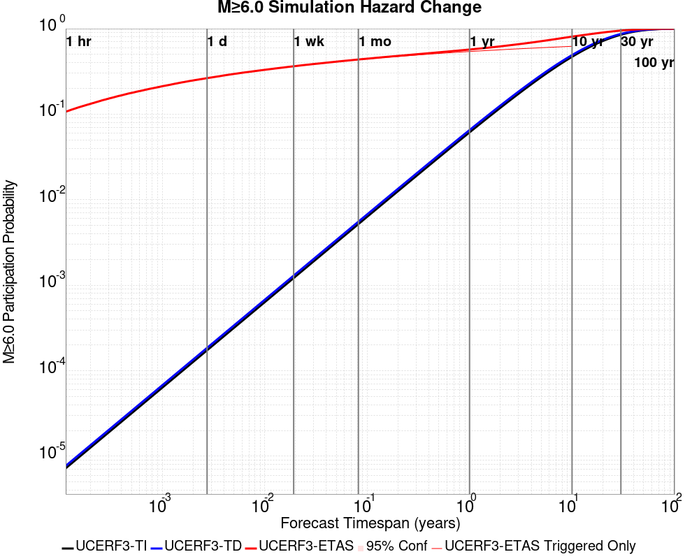
| Forecast Duration | UCERF3-ETAS [95% Conf] | UCERF3-ETAS Triggered Only | UCERF3-TD | UCERF3-ETAS/TD Gain | UCERF3-TI |
|---|---|---|---|---|---|
| 1 Hour | 0.107 [0.105 - 0.109] | 0.107 | 7.71E-6 | 13855.29 | 7.22E-6 |
| 1 Day | 0.264 [0.261 - 0.267] | 0.264 | 1.85E-4 | 1427.17 | 1.73E-4 |
| 1 Week | 0.363 [0.360 - 0.366] | 0.362 | 1.29E-3 | 280.54 | 1.21E-3 |
| 1 Month | 0.436 [0.433 - 0.440] | 0.433 | 5.54E-3 | 78.83 | 5.19E-3 |
| 1 Year | 0.571 [0.568 - 0.574] | 0.541 | 0.065 | 8.73 | 0.061 |
| 10 Years | 0.808 [0.806 - 0.810] | 0.622 | 0.492 | 1.64 | 0.469 |
| 30 Years | 0.951 [0.950 - 0.951] * | * | 0.869 | 1.09 * | 0.850 |
| 100 Years | 1.000 [1.000 - 1.000] * | * | 0.999 | 1 * | 0.998 |
* forecast duration is longer than simulation length, only ETAS ruptures from the first 10 years are included

| Forecast Duration | UCERF3-ETAS [95% Conf] | UCERF3-ETAS Triggered Only | UCERF3-TD | UCERF3-ETAS/TD Gain | UCERF3-TI |
|---|---|---|---|---|---|
| 1 Hour | 5.85E-3 [5.39E-3 - 6.35E-3] | 5.85E-3 | 7.11E-7 | 8228.02 | 6.43E-7 |
| 1 Day | 0.016 [0.015 - 0.017] | 0.016 | 1.71E-5 | 935.03 | 1.54E-5 |
| 1 Week | 0.024 [0.023 - 0.025] | 0.024 | 1.19E-4 | 200.72 | 1.08E-4 |
| 1 Month | 0.031 [0.030 - 0.032] | 0.030 | 5.12E-4 | 59.84 | 4.63E-4 |
| 1 Year | 0.048 [0.047 - 0.050] | 0.042 | 6.21E-3 | 7.78 | 5.62E-3 |
| 10 Years | 0.111 [0.110 - 0.113] | 0.054 | 0.061 | 1.84 | 0.055 |
| 30 Years | 0.217 [0.216 - 0.219] * | * | 0.173 | 1.26 * | 0.156 |
| 100 Years | 0.510 [0.510 - 0.511] * | * | 0.482 | 1.06 * | 0.431 |
* forecast duration is longer than simulation length, only ETAS ruptures from the first 10 years are included

| Forecast Duration | UCERF3-ETAS [95% Conf] | UCERF3-ETAS Triggered Only | UCERF3-TD | UCERF3-ETAS/TD Gain | UCERF3-TI |
|---|---|---|---|---|---|
| 1 Hour | 1.00E-5 [5.34E-7 - 6.50E-5] | 1.00E-5 | 1.24E-8 | 809.66 | 1.06E-8 |
| 1 Day | 4.03E-5 [1.31E-5 - 1.10E-4] | 4.00E-5 | 2.97E-7 | 135.78 | 2.54E-7 |
| 1 Week | 8.21E-5 [3.93E-5 - 1.67E-4] | 8.00E-5 | 2.08E-6 | 39.51 | 1.78E-6 |
| 1 Month | 1.09E-4 [5.97E-5 - 1.99E-4] | 1.00E-4 | 8.90E-6 | 12.23 | 7.63E-6 |
| 1 Year | 2.48E-4 [1.88E-4 - 3.50E-4] | 1.40E-4 | 1.08E-4 | 2.29 | 9.29E-5 |
| 10 Years | 1.31E-3 [1.23E-3 - 1.42E-3] | 2.10E-4 | 1.10E-3 | 1.19 | 9.29E-4 |
| 30 Years | 3.71E-3 [3.64E-3 - 3.83E-3] * | * | 3.50E-3 | 1.06 * | 2.78E-3 |
| 100 Years | 0.014 [0.014 - 0.014] * | * | 0.014 | 1.02 * | 9.25E-3 |
* forecast duration is longer than simulation length, only ETAS ruptures from the first 10 years are included


| Section Name | Strike, Dip, Rake | # Hypos In Poly | Max Mag w/ Hypo In Poly | # Surfs In Poly | Max Mag w/ Surf In Poly | Min Dist To Any (km) | Min Poly Dist To Any (km) | Min Dist To Largest (km) | Min Poly Dist To Largest (km) | Min Hypo Dist To Largest (km) | Min Hypo Poly Dist To Largest (km) |
|---|---|---|---|---|---|---|---|---|---|---|---|
| Airport Lake | 359, 50, -90 | 86 | 7.1 | 86 | 7.1 | 0.142 | 0.000 | 0.142 | 0.000 | 4.777 | 0.000 |
| Little Lake | 327, 90, 180 | 16 | 3.85 | 17 | 7.1 | 2.321 | 0.000 | 10.964 | 0.000 | 13.484 | 0.874 |
| Garlock (Central) | 69, 90, 0 | 2 | 3.21 | 3 | 7.1 | 10.487 | 0.000 | 11.372 | 0.000 | 32.260 | 19.784 |
| So Sierra Nevada | 2, 50, -90 | 1 | 2.75 | 1 | 2.75 | 1.410 | 0.000 | 4.051 | 3.719 | 15.015 | 14.621 |
| Tank Canyon | 189, 50, -90 | 0 | 0 | 8.828 | 8.822 | 8.828 | 8.822 | 25.783 | 24.211 | ||
| Scodie Lineament | 221, 68, 0 | 0 | 0 | 16.722 | 15.781 | 28.437 | 27.470 | 37.414 | 32.142 | ||
| Blackwater | 325, 90, 180 | 0 | 0 | 18.751 | 15.133 | 18.751 | 15.133 | 39.597 | 38.195 |
These are map plots of individual catalogs from the simulations, selected as the closest catalog to each of the given percentiles in terms of total number of events.
| Duration | p0.0 %-ile | p25.0 %-ile | p50.0 %-ile | p75.0 %-ile | p90.0 %-ile | p95.0 %-ile | p97.5 %-ile | p98.0 %-ile | p99.0 %-ile | p99.5 %-ile | p99.9 %-ile | p100.0 %-ile |
|---|---|---|---|---|---|---|---|---|---|---|---|---|
| 1 Week |  |  |  |  |  | |||||||
| 1 Month |  |  |  |  |  |  |  | |||||
| 1 Year |  |  |  |  |  |  |  | |||||
| 10 Year |  |  |  |  |  |  |
| Min Mag | 1 yr Triggered Ruptures (no spontaneous) | 10 yr Triggered Ruptures (no spontaneous) | 10 yr Triggered Ruptures (primary aftershocks only) |
|---|---|---|---|
| All Supra. Seis. |  |  |  |
| M≥6.5 |  |  | |
| M≥7 |  | 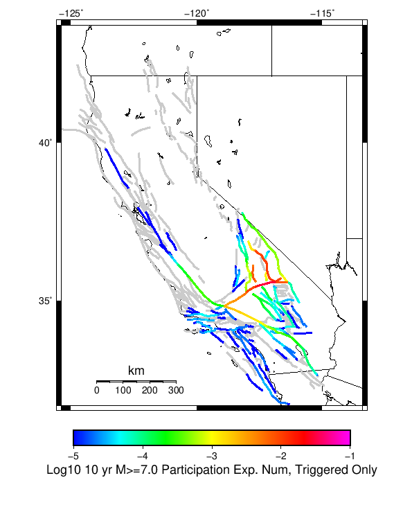 |  |
| M≥7.5 | 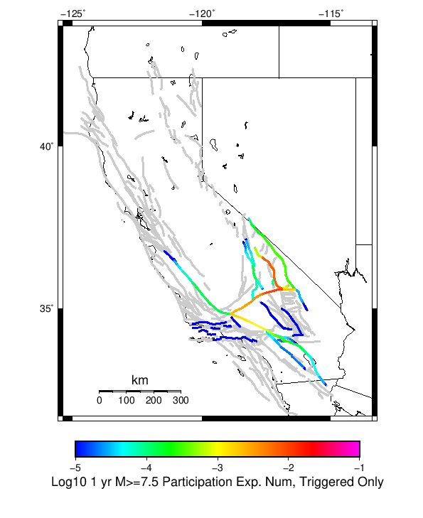 |  |  |
| M≥8 |  |
First 10 of 198 with matching ruptures shown
| Parent Name | Triggered 10 Year Mean Count | Triggered 1 Day Prob | Triggered 1 Week Prob | Triggered 1 Month Prob | Triggered 1 Year Prob | Triggered 10 Year Prob | Triggered 10 Year Primary Mean Count |
|---|---|---|---|---|---|---|---|
| Tank Canyon | 0.135 | 0.02376 | 0.03889 | 0.05338 | 0.08286 | 0.11398 | 0.03483 |
| Garlock (Central) | 0.07995 | 0.02346 | 0.03471 | 0.04373 | 0.06078 | 0.07682 | 0.03845 |
| Little Lake | 0.06361 | 0.02134 | 0.03051 | 0.0379 | 0.05006 | 0.06147 | 0.03629 |
| Airport Lake | 0.04906 | 0.01875 | 0.0256 | 0.03129 | 0.0403 | 0.04883 | 0.0324 |
| Owl Lake | 0.03004 | 0.00593 | 0.00955 | 0.01266 | 0.0194 | 0.02628 | 0.0068 |
| Panamint Valley | 0.02602 | 0.00555 | 0.00897 | 0.01203 | 0.01865 | 0.02519 | 0.00794 |
| Garlock (East) | 0.01914 | 0.00378 | 0.00592 | 0.00781 | 0.01263 | 0.01736 | 0.00454 |
| Ash Hill | 0.01234 | 0.00206 | 0.00334 | 0.00492 | 0.00796 | 0.01167 | 0.00228 |
| Blackwater | 0.01055 | 0.00212 | 0.00336 | 0.00465 | 0.0071 | 0.00998 | 0.00263 |
| Hunter Mountain-Saline Valley | 0.01019 | 0.00263 | 0.00417 | 0.00537 | 0.00764 | 0.00991 | 0.00399 |
First 10 of 174 with matching ruptures shown
| Parent Name | Triggered 10 Year Mean Count | Triggered 1 Day Prob | Triggered 1 Week Prob | Triggered 1 Month Prob | Triggered 1 Year Prob | Triggered 10 Year Prob | Triggered 10 Year Primary Mean Count |
|---|---|---|---|---|---|---|---|
| Little Lake | 0.03907 | 0.01351 | 0.01931 | 0.02376 | 0.0314 | 0.03832 | 0.02333 |
| Airport Lake | 0.03616 | 0.01382 | 0.01892 | 0.02296 | 0.02975 | 0.03611 | 0.02388 |
| Garlock (Central) | 0.03542 | 0.01012 | 0.01525 | 0.01916 | 0.02712 | 0.03469 | 0.0164 |
| Panamint Valley | 0.02364 | 0.00527 | 0.00841 | 0.0112 | 0.01712 | 0.02295 | 0.0077 |
| Owl Lake | 0.01546 | 0.00383 | 0.00601 | 0.00772 | 0.01149 | 0.01532 | 0.00545 |
| Tank Canyon | 0.01481 | 0.00278 | 0.00447 | 0.00627 | 0.01034 | 0.01474 | 0.00395 |
| Garlock (East) | 0.01227 | 0.00286 | 0.00452 | 0.00572 | 0.00881 | 0.01159 | 0.00409 |
| Hunter Mountain-Saline Valley | 0.00987 | 0.00259 | 0.00409 | 0.00526 | 0.00749 | 0.00971 | 0.00393 |
| Garlock (West) | 0.00551 | 0.00157 | 0.00244 | 0.00306 | 0.00432 | 0.00551 | 0.00249 |
| So Sierra Nevada | 0.00424 | 8.0E-4 | 0.00127 | 0.00188 | 0.00299 | 0.00418 | 9.1E-4 |
First 10 of 116 with matching ruptures shown
| Parent Name | Triggered 10 Year Mean Count | Triggered 1 Day Prob | Triggered 1 Week Prob | Triggered 1 Month Prob | Triggered 1 Year Prob | Triggered 10 Year Prob | Triggered 10 Year Primary Mean Count |
|---|---|---|---|---|---|---|---|
| Garlock (Central) | 0.03142 | 0.0091 | 0.01374 | 0.01712 | 0.02419 | 0.03091 | 0.01461 |
| Panamint Valley | 0.01385 | 0.00378 | 0.00571 | 0.00735 | 0.01053 | 0.01376 | 0.00571 |
| Owl Lake | 0.01077 | 0.0031 | 0.00472 | 0.00586 | 0.00831 | 0.01077 | 0.00508 |
| Hunter Mountain-Saline Valley | 0.00944 | 0.00255 | 0.00398 | 0.0051 | 0.00728 | 0.00941 | 0.00389 |
| Garlock (East) | 0.00832 | 0.00234 | 0.00366 | 0.00451 | 0.00659 | 0.00828 | 0.0038 |
| Little Lake | 0.00768 | 0.00293 | 0.004 | 0.00498 | 0.00636 | 0.00768 | 0.00513 |
| Airport Lake | 0.00719 | 0.00277 | 0.00382 | 0.00467 | 0.00598 | 0.00719 | 0.00482 |
| Garlock (West) | 0.00537 | 0.00155 | 0.00242 | 0.00302 | 0.00426 | 0.00537 | 0.00245 |
| San Andreas (Mojave N) | 0.00243 | 6.6E-4 | 9.5E-4 | 0.00123 | 0.00181 | 0.00239 | 9.3E-4 |
| San Andreas (Mojave S) | 0.00202 | 5.5E-4 | 7.6E-4 | 0.00101 | 0.00152 | 0.00201 | 8.1E-4 |
First 10 of 66 with matching ruptures shown
| Parent Name | Triggered 10 Year Mean Count | Triggered 1 Day Prob | Triggered 1 Week Prob | Triggered 1 Month Prob | Triggered 1 Year Prob | Triggered 10 Year Prob | Triggered 10 Year Primary Mean Count |
|---|---|---|---|---|---|---|---|
| Garlock (Central) | 0.01277 | 0.00371 | 0.00572 | 0.0072 | 0.01006 | 0.01272 | 0.00582 |
| Panamint Valley | 0.00893 | 0.00247 | 0.00387 | 0.00491 | 0.00695 | 0.00893 | 0.00381 |
| Hunter Mountain-Saline Valley | 0.00892 | 0.00247 | 0.00387 | 0.00491 | 0.00694 | 0.00892 | 0.00381 |
| Garlock (West) | 0.00477 | 0.00137 | 0.00213 | 0.00269 | 0.00379 | 0.00477 | 0.00221 |
| Garlock (East) | 0.00288 | 8.2E-4 | 0.0013 | 0.00163 | 0.00232 | 0.00288 | 0.00136 |
| San Andreas (Mojave N) | 0.00241 | 6.5E-4 | 9.4E-4 | 0.00122 | 0.0018 | 0.00238 | 9.3E-4 |
| San Andreas (Mojave S) | 0.00188 | 5.2E-4 | 7.2E-4 | 9.5E-4 | 0.00143 | 0.00187 | 7.6E-4 |
| Owl Lake | 0.00109 | 2.9E-4 | 4.4E-4 | 5.7E-4 | 8.2E-4 | 0.00109 | 4.4E-4 |
| San Andreas (San Bernardino N) | 0.00101 | 2.6E-4 | 3.8E-4 | 5.5E-4 | 7.7E-4 | 0.001 | 4.2E-4 |
| San Andreas (San Bernardino S) | 4.6E-4 | 1.4E-4 | 2.0E-4 | 2.6E-4 | 3.5E-4 | 4.6E-4 | 2.0E-4 |
First 10 of 26 with matching ruptures shown
| Parent Name | Triggered 10 Year Mean Count | Triggered 1 Day Prob | Triggered 1 Week Prob | Triggered 1 Month Prob | Triggered 1 Year Prob | Triggered 10 Year Prob | Triggered 10 Year Primary Mean Count |
|---|---|---|---|---|---|---|---|
| San Andreas (Mojave N) | 2.3E-4 | 4.0E-5 | 9.0E-5 | 1.1E-4 | 1.6E-4 | 2.3E-4 | 9.0E-5 |
| San Andreas (Mojave S) | 2.3E-4 | 4.0E-5 | 9.0E-5 | 1.1E-4 | 1.6E-4 | 2.3E-4 | 9.0E-5 |
| San Andreas (San Bernardino N) | 2.3E-4 | 4.0E-5 | 9.0E-5 | 1.1E-4 | 1.6E-4 | 2.3E-4 | 9.0E-5 |
| Garlock (Central) | 2.1E-4 | 4.0E-5 | 8.0E-5 | 1.0E-4 | 1.4E-4 | 2.1E-4 | 8.0E-5 |
| Garlock (West) | 2.1E-4 | 4.0E-5 | 8.0E-5 | 1.0E-4 | 1.4E-4 | 2.1E-4 | 8.0E-5 |
| Garlock (East) | 1.8E-4 | 3.0E-5 | 6.0E-5 | 8.0E-5 | 1.2E-4 | 1.8E-4 | 8.0E-5 |
| San Andreas (San Bernardino S) | 1.5E-4 | 3.0E-5 | 6.0E-5 | 8.0E-5 | 1.1E-4 | 1.5E-4 | 6.0E-5 |
| San Andreas (San Gorgonio Pass-Garnet HIll) | 1.5E-4 | 3.0E-5 | 6.0E-5 | 8.0E-5 | 1.1E-4 | 1.5E-4 | 6.0E-5 |
| San Andreas (Coachella) rev | 1.4E-4 | 3.0E-5 | 6.0E-5 | 8.0E-5 | 1.0E-4 | 1.4E-4 | 7.0E-5 |
| San Andreas (North Branch Mill Creek) | 5.0E-5 | 0.0 | 2.0E-5 | 2.0E-5 | 3.0E-5 | 5.0E-5 | 1.0E-5 |
The first 5 sections (sorted by trigger rate) are plotted below. All fault MPDs are available here
| 1 Week | 1 Month | 1 Year | 10 Year |
|---|---|---|---|
 |  |  |  |
 |  |  |  |
 |  | 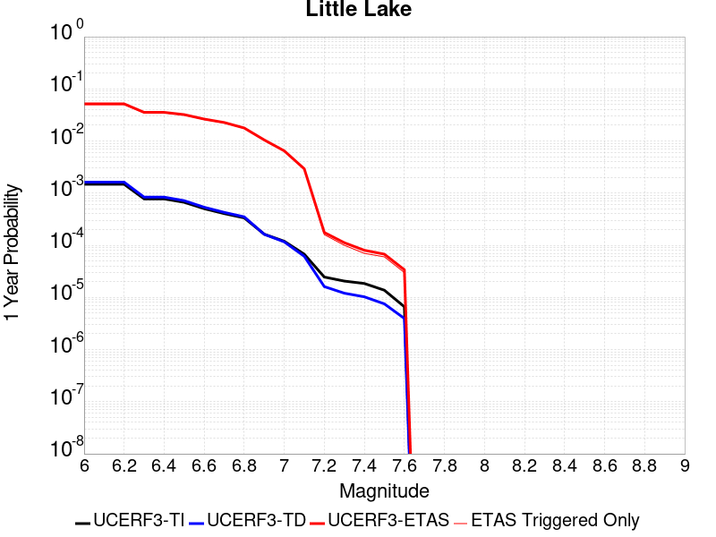 | 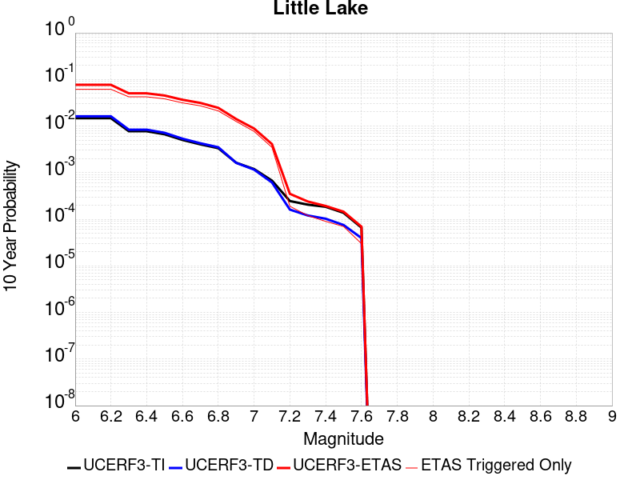 |
 | 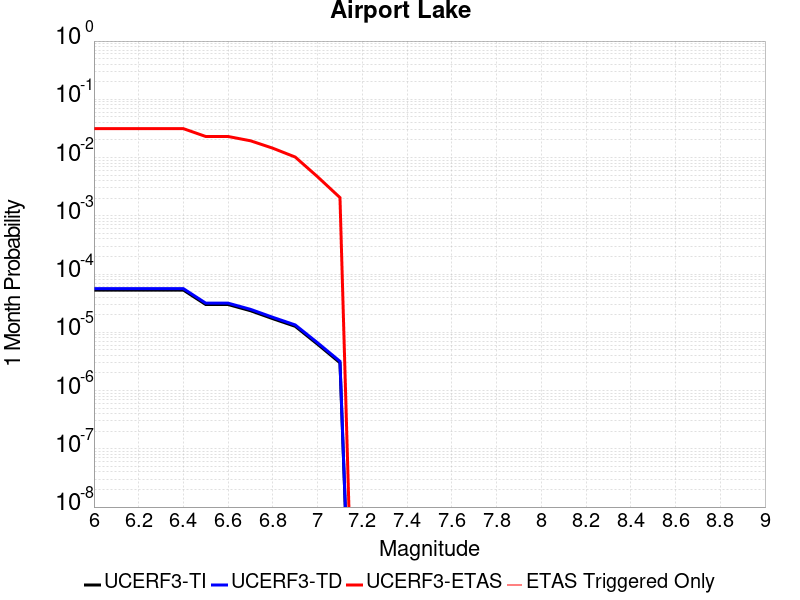 |  |  |
 |  |  | 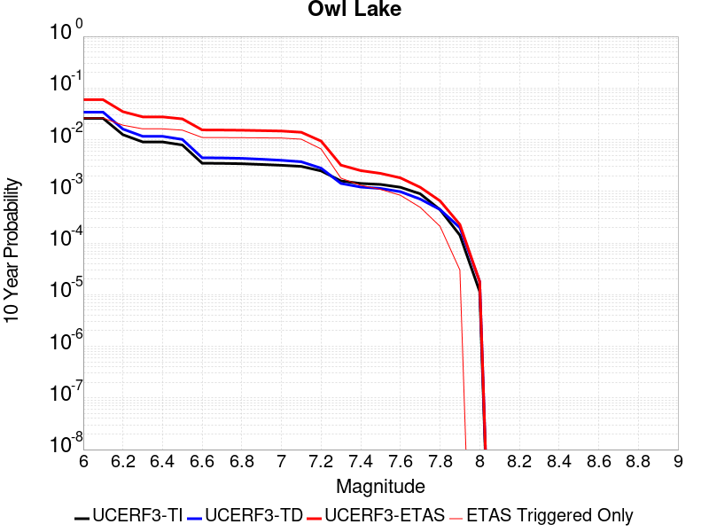 |
| Min Mag | Triggered Ruptures (no spontaneous) | Triggered Ruptures (primary aftershocks only) |
|---|---|---|
| M≥2.5 | 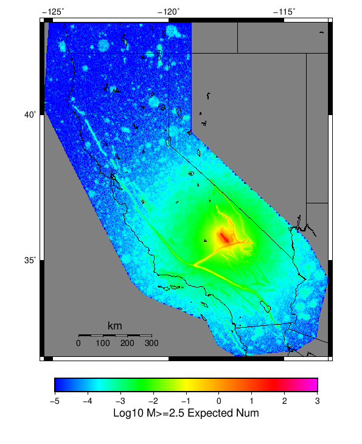 |  |
| M≥5 |  |  |
| M≥6 |  | 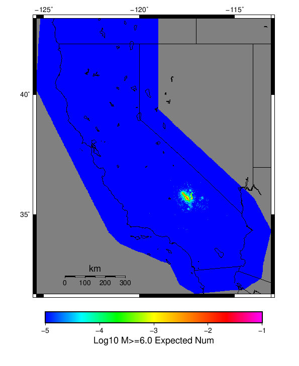 |
| M≥7 |  |  |
{
"numSimulations": 100000,
"duration": 10.0,
"startTimeMillis": 1562383193000,
"includeSpontaneous": false,
"randomSeed": 123456789,
"binaryOutput": true,
"binaryOutputFilters": [
{
"prefix": "results_complete",
"descendantsOnly": false
},
{
"prefix": "results_m5_preserve_chain",
"minMag": 5.0,
"preserveChainBelowMag": true,
"descendantsOnly": false
}
],
"forceRecalc": false,
"reuseERFs": true,
"simulationName": "Searless Valley Sequence Finite Fault",
"numRetries": 3,
"outputDir": "/home/scec-02/kmilner/ucerf3/etas_sim/2019_07_06-SearlessValleySequenceFiniteFault-noSpont-full_td-10yr-following-M7.1",
"triggerRuptures": [
"omitted due to length, see original input file"
],
"cacheDir": "/home/scec-02/kmilner/ucerf3/ucerf3-etas-launcher/inputs/cache_fm3p1_ba",
"fssFile": "/home/scec-02/kmilner/ucerf3/ucerf3-etas-launcher/inputs/2013_05_10-ucerf3p3-production-10runs_COMPOUND_SOL_FM3_1_SpatSeisU3_MEAN_BRANCH_AVG_SOL.zip",
"probModel": "FULL_TD",
"applySubSeisForSupraNucl": true,
"totRateScaleFactor": 1.14,
"gridSeisCorr": true,
"timeIndependentERF": false,
"griddedOnly": false,
"imposeGR": false,
"includeIndirectTriggering": true,
"gridSeisDiscr": 0.1,
"catalogCompletenessModel": "RELAXED"
}